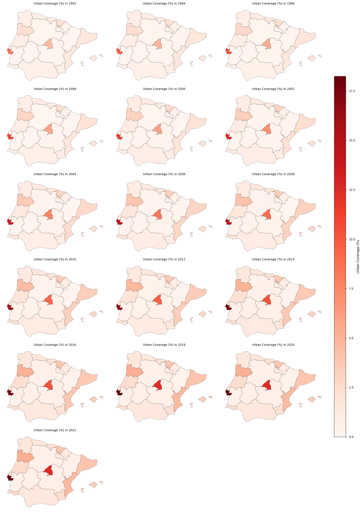

1.4.1. Satellite Land Cover trend assessment for Spatial Planning and Land Management#
Production date: 01-07-2024
Produced by: Inês Girão (+ATLANTIC)
🌍 Use case: Using land cover products to quantify urbanisation trends#
❓ Quality assessment question#
Is the dataset accurate and consistent for the analysis of urbanisation trends in the Iberian Peninsula?
Land Cover data is an invaluable resource for a wide range of fields, from climate change research to urban planning. Land Cover products that provide historical timelines enable scientists, policymakers, and planners to understand and analyse the transformation of land cover over recent decades (Vargo et al, 2013; Chang et al., 2018).
This notebook will access the Land cover classification gridded maps from 1992 to present derived from satellite observations (henceforth, LC) data from the Climate Data Store (CDS) of the Copernicus Climate Change Service (C3S), and analyse the spatial patterns of the LC over a given Area of Interest (AoI) and time.
📢 Quality assessment statement#
These are the key outcomes of this assessment
The dataset maintains strong temporal continuity, with annual updates ensuring a smooth and reliable representation of land cover changes over time. While breakpoints were identified, they generally did not indicate major disruptions, reinforcing the dataset’s stability for long-term trend analysis.
The presence of breakpoints does not necessarily indicate abrupt landscape shifts but rather highlights the sensitivity of detection methods to gradual changes. This suggests that while breakpoints can help refine analysis, their impact on overall trends remains limited, emphasising the dataset’s resilience to minor variations.
For the specific land cover type analysed, the dataset exhibits a consistent ability to capture underlying trends. The similarity in results across segmented and total trends suggests that the data structure is well-calibrated, minimising distortions that could arise from classification inconsistencies or methodological biases.

📋 Methodology#
This Use Case comprises the following steps:
1. Define the AoI, search and download LC data
2. Inspect and view data for the defined AoI (Iberian Peninsula)
📈 Analysis and results#
1. Define the AoI, search and download LC data#
Before we begin we must prepare our environment. This includes installing the Application Programming Interface (API) of the CDS, and importing the various python libraries that we will need.
Install CDS API#
To install the CDS API, run the following command. We use an exclamation mark to pass the command to the shell (not to the Python interpreter). If you already have the CDS API installed, you can skip or comment this step.
Show code cell source
!pip install cdsapi
Requirement already satisfied: cdsapi in /home/inesvzgirao/miniconda3/envs/C3S/lib/python3.11/site-packages (0.7.5)
Requirement already satisfied: datapi in /home/inesvzgirao/miniconda3/envs/C3S/lib/python3.11/site-packages (from cdsapi) (0.1.1)
Requirement already satisfied: requests>=2.5.0 in /home/inesvzgirao/miniconda3/envs/C3S/lib/python3.11/site-packages (from cdsapi) (2.32.3)
Requirement already satisfied: tqdm in /home/inesvzgirao/miniconda3/envs/C3S/lib/python3.11/site-packages (from cdsapi) (4.67.1)
Requirement already satisfied: charset_normalizer<4,>=2 in /home/inesvzgirao/miniconda3/envs/C3S/lib/python3.11/site-packages (from requests>=2.5.0->cdsapi) (3.4.0)
Requirement already satisfied: idna<4,>=2.5 in /home/inesvzgirao/miniconda3/envs/C3S/lib/python3.11/site-packages (from requests>=2.5.0->cdsapi) (3.10)
Requirement already satisfied: urllib3<3,>=1.21.1 in /home/inesvzgirao/miniconda3/envs/C3S/lib/python3.11/site-packages (from requests>=2.5.0->cdsapi) (2.2.3)
Requirement already satisfied: certifi>=2017.4.17 in /home/inesvzgirao/miniconda3/envs/C3S/lib/python3.11/site-packages (from requests>=2.5.0->cdsapi) (2024.8.30)
Requirement already satisfied: attrs in /home/inesvzgirao/miniconda3/envs/C3S/lib/python3.11/site-packages (from datapi->cdsapi) (24.3.0)
Requirement already satisfied: multiurl>=0.3.2 in /home/inesvzgirao/miniconda3/envs/C3S/lib/python3.11/site-packages (from datapi->cdsapi) (0.3.3)
Requirement already satisfied: typing-extensions in /home/inesvzgirao/miniconda3/envs/C3S/lib/python3.11/site-packages (from datapi->cdsapi) (4.12.2)
Requirement already satisfied: pytz in /home/inesvzgirao/miniconda3/envs/C3S/lib/python3.11/site-packages (from multiurl>=0.3.2->datapi->cdsapi) (2024.2)
Requirement already satisfied: python-dateutil in /home/inesvzgirao/miniconda3/envs/C3S/lib/python3.11/site-packages (from multiurl>=0.3.2->datapi->cdsapi) (2.9.0.post0)
Requirement already satisfied: six>=1.5 in /home/inesvzgirao/miniconda3/envs/C3S/lib/python3.11/site-packages (from python-dateutil->multiurl>=0.3.2->datapi->cdsapi) (1.17.0)
Import all the libraries/packages#
We will be working with data in NetCDF format. To best handle this type of data we will use libraries for working with multidimensional arrays, in particular Xarray. We will also need libraries for plotting and viewing data.
Show code cell source
# Import Standard Libraries
import random
from collections import defaultdict
# Import Numerical & Statistical Libraries
import numpy as np
import pandas as pd
import xarray as xr
import dask
from scipy.stats import linregress, f, kendalltau, theilslopes
from statsmodels.api import OLS
from numpy.polynomial.polynomial import Polynomial
import ruptures as rpt
from scipy.optimize import curve_fit
from sklearn.linear_model import LinearRegression
from sklearn.preprocessing import PolynomialFeatures
from sklearn.metrics import r2_score
from scipy.signal import savgol_filter
# Import Geospatial Libraries
import geopandas as gpd # Import vector geospatial data
import regionmask # Transform attributes and geometries into specific regions
from shapely.geometry import box, Polygon
# Import Visualization Libraries
import matplotlib.pyplot as plt
import matplotlib.colors as colors
from matplotlib.colors import TwoSlopeNorm, Normalize
from matplotlib.patches import Patch
# Import External Tools
from c3s_eqc_automatic_quality_control import download, plot, utils
# Set Matplotlib Style
plt.style.use("seaborn-v0_8-notebook") # Predefined style for all graphical outputs
Data Overview#
To search for data, visit the CDS website: http://cds.climate.copernicus.eu. Here you can search for ‘Satellite observations’ using the search bar. The data we need for this tutorial is the Land cover classification gridded maps from 1992 to present derived from satellite observations. This catalogue entry provides global Land Cover Classification (LCC) maps with a very high spatial resolution, with a L4 processing level, on an annual basis with a one-year delay, following the Global Climate Observing System (GCOS) convention requirements. LULC maps correspond to a global classification scheme, encompassing 22 classes.
The dataset consists of 2 versions (v2.0.7 produced by the European Space Agency (ESA) Climate Change Initiative (CCI) and v2.1.1 produced by Copernicus Climate Change Service (C3S)).
Data specifications for this use case:
Years: 1992 to 2022
Version: v2.0.7 before 1992 and v2.1.1 after 2016
Format: Zip files
At the end of the download form, select “Show API request”. This will reveal a block of code, which you can simply copy and paste into a cell of your Jupyter Notebook. Having copied the API request, running it will retrieve and download the data you requested into your local directory. However, before you run it, the terms and conditions of this particular dataset need to have been accepted directly at the CDS website. The option to view and accept these conditions is given at the end of the download form, just above the “Show API request” option. In addition, it is also useful to define the time period and AoI parameters and edit the request accordingly, as exemplified in the cells below.
Show code cell source
#Years to download
years = [1992, 1993, 1994,
1995, 1996, 1997,
1998, 1999, 2000,
2001, 2002, 2003,
2004, 2005, 2006,
2007, 2008, 2009,
2010, 2011, 2012,
2013, 2014, 2015,
2016, 2017, 2018,
2019, 2020, 2021,
2022, 2022]
# List of requests to retrieve data
collection_id = "satellite-land-cover"
requests = [
{
"variable": "all",
"format": "zip",
"version": "v2_0_7cds" if year < 2016 else "v2_1_1",
"year": str(year),
"area": [45, -10, 35, 4] # Region of interest (Iberian Peninsula)
}
for year in years
]
Show code cell source
# Download and regionalize by AoI
ds = download.download_and_transform(
collection_id,
requests,
)
ds = ds.assign_coords(year=ds["time"].dt.year).swap_dims(time="year").drop("time")
0%| | 0/32 [00:00<?, ?it/s]2025-04-30 11:46:38,909 WARNING [2025-04-29T00:00:00] Multiple maintenance sessions are planned this week, which may affect data downloads and other services. Check [here](https://status.ecmwf.int/) for status updates.
2025-04-30 11:46:38,911 INFO [2024-09-26T00:00:00] Watch our [Forum](https://forum.ecmwf.int/) for Announcements, news and other discussed topics.
2025-04-30 11:46:38,912 WARNING [2024-06-16T00:00:00] CDS API syntax is changed and some keys or parameter names may have also changed. To avoid requests failing, please use the "Show API request code" tool on the dataset Download Form to check you are using the correct syntax for your API request.
2025-04-30 11:46:39,194 WARNING [2025-04-29T00:00:00] Multiple maintenance sessions are planned this week, which may affect data downloads and other services. Check [here](https://status.ecmwf.int/) for status updates.
2025-04-30 11:46:39,196 INFO [2024-09-26T00:00:00] Watch our [Forum](https://forum.ecmwf.int/) for Announcements, news and other discussed topics.
2025-04-30 11:46:39,197 WARNING [2024-06-16T00:00:00] CDS API syntax is changed and some keys or parameter names may have also changed. To avoid requests failing, please use the "Show API request code" tool on the dataset Download Form to check you are using the correct syntax for your API request.
2025-04-30 11:46:39,580 INFO Request ID is a524c218-b9cb-4e4d-9530-aff1bed008a5
2025-04-30 11:46:39,672 INFO status has been updated to accepted
Recovering from connection error [('Connection aborted.', RemoteDisconnected('Remote end closed connection without response'))], attemps 1 of 500
Retrying in 120 seconds
2025-04-30 12:23:04,955 INFO status has been updated to running
2025-04-30 12:31:06,134 INFO status has been updated to successful
3%|▎ | 1/32 [44:29<22:59:23, 2669.81s/it]2025-04-30 12:31:08,530 WARNING [2025-04-29T00:00:00] Multiple maintenance sessions are planned this week, which may affect data downloads and other services. Check [here](https://status.ecmwf.int/) for status updates.
2025-04-30 12:31:08,530 INFO [2024-09-26T00:00:00] Watch our [Forum](https://forum.ecmwf.int/) for Announcements, news and other discussed topics.
2025-04-30 12:31:08,531 WARNING [2024-06-16T00:00:00] CDS API syntax is changed and some keys or parameter names may have also changed. To avoid requests failing, please use the "Show API request code" tool on the dataset Download Form to check you are using the correct syntax for your API request.
2025-04-30 12:31:08,802 WARNING [2025-04-29T00:00:00] Multiple maintenance sessions are planned this week, which may affect data downloads and other services. Check [here](https://status.ecmwf.int/) for status updates.
2025-04-30 12:31:08,802 INFO [2024-09-26T00:00:00] Watch our [Forum](https://forum.ecmwf.int/) for Announcements, news and other discussed topics.
2025-04-30 12:31:08,803 WARNING [2024-06-16T00:00:00] CDS API syntax is changed and some keys or parameter names may have also changed. To avoid requests failing, please use the "Show API request code" tool on the dataset Download Form to check you are using the correct syntax for your API request.
2025-04-30 12:31:09,456 INFO Request ID is 8078eca7-2c6b-4d16-b15b-2e40308ff96e
2025-04-30 12:31:09,649 INFO status has been updated to accepted
2025-04-30 12:31:42,974 INFO status has been updated to running
2025-04-30 12:37:29,636 INFO status has been updated to successful
6%|▋ | 2/32 [50:53<11:02:34, 1325.16s/it]2025-04-30 12:37:32,410 WARNING [2025-04-29T00:00:00] Multiple maintenance sessions are planned this week, which may affect data downloads and other services. Check [here](https://status.ecmwf.int/) for status updates.
2025-04-30 12:37:32,412 INFO [2024-09-26T00:00:00] Watch our [Forum](https://forum.ecmwf.int/) for Announcements, news and other discussed topics.
2025-04-30 12:37:32,414 WARNING [2024-06-16T00:00:00] CDS API syntax is changed and some keys or parameter names may have also changed. To avoid requests failing, please use the "Show API request code" tool on the dataset Download Form to check you are using the correct syntax for your API request.
2025-04-30 12:37:32,664 WARNING [2025-04-29T00:00:00] Multiple maintenance sessions are planned this week, which may affect data downloads and other services. Check [here](https://status.ecmwf.int/) for status updates.
2025-04-30 12:37:32,666 INFO [2024-09-26T00:00:00] Watch our [Forum](https://forum.ecmwf.int/) for Announcements, news and other discussed topics.
2025-04-30 12:37:32,669 WARNING [2024-06-16T00:00:00] CDS API syntax is changed and some keys or parameter names may have also changed. To avoid requests failing, please use the "Show API request code" tool on the dataset Download Form to check you are using the correct syntax for your API request.
2025-04-30 12:37:33,179 INFO Request ID is 8a0ca309-d10f-4625-881a-86abfeddeff9
2025-04-30 12:37:33,272 INFO status has been updated to accepted
2025-04-30 12:38:06,155 INFO status has been updated to running
2025-04-30 12:43:52,790 INFO status has been updated to successful
9%|▉ | 3/32 [57:16<7:12:29, 894.83s/it] 2025-04-30 12:43:55,140 WARNING [2025-04-29T00:00:00] Multiple maintenance sessions are planned this week, which may affect data downloads and other services. Check [here](https://status.ecmwf.int/) for status updates.
2025-04-30 12:43:55,143 INFO [2024-09-26T00:00:00] Watch our [Forum](https://forum.ecmwf.int/) for Announcements, news and other discussed topics.
2025-04-30 12:43:55,145 WARNING [2024-06-16T00:00:00] CDS API syntax is changed and some keys or parameter names may have also changed. To avoid requests failing, please use the "Show API request code" tool on the dataset Download Form to check you are using the correct syntax for your API request.
2025-04-30 12:43:55,378 WARNING [2025-04-29T00:00:00] Multiple maintenance sessions are planned this week, which may affect data downloads and other services. Check [here](https://status.ecmwf.int/) for status updates.
2025-04-30 12:43:55,380 INFO [2024-09-26T00:00:00] Watch our [Forum](https://forum.ecmwf.int/) for Announcements, news and other discussed topics.
2025-04-30 12:43:55,382 WARNING [2024-06-16T00:00:00] CDS API syntax is changed and some keys or parameter names may have also changed. To avoid requests failing, please use the "Show API request code" tool on the dataset Download Form to check you are using the correct syntax for your API request.
2025-04-30 12:43:55,637 INFO Request ID is 4c07d2e3-6805-42d9-a9c2-bff7c60ddf15
2025-04-30 12:43:56,035 INFO status has been updated to accepted
2025-04-30 12:44:01,087 INFO status has been updated to running
2025-04-30 12:50:15,716 INFO status has been updated to successful
12%|█▎ | 4/32 [1:03:39<5:23:21, 692.92s/it]2025-04-30 12:50:18,510 WARNING [2025-04-29T00:00:00] Multiple maintenance sessions are planned this week, which may affect data downloads and other services. Check [here](https://status.ecmwf.int/) for status updates.
2025-04-30 12:50:18,512 INFO [2024-09-26T00:00:00] Watch our [Forum](https://forum.ecmwf.int/) for Announcements, news and other discussed topics.
2025-04-30 12:50:18,513 WARNING [2024-06-16T00:00:00] CDS API syntax is changed and some keys or parameter names may have also changed. To avoid requests failing, please use the "Show API request code" tool on the dataset Download Form to check you are using the correct syntax for your API request.
2025-04-30 12:50:23,725 WARNING [2025-04-29T00:00:00] Multiple maintenance sessions are planned this week, which may affect data downloads and other services. Check [here](https://status.ecmwf.int/) for status updates.
2025-04-30 12:50:23,727 INFO [2024-09-26T00:00:00] Watch our [Forum](https://forum.ecmwf.int/) for Announcements, news and other discussed topics.
2025-04-30 12:50:23,728 WARNING [2024-06-16T00:00:00] CDS API syntax is changed and some keys or parameter names may have also changed. To avoid requests failing, please use the "Show API request code" tool on the dataset Download Form to check you are using the correct syntax for your API request.
2025-04-30 12:50:23,990 INFO Request ID is ad76e930-0d0e-430c-8db9-6ea1e6b90301
2025-04-30 12:50:24,066 INFO status has been updated to accepted
2025-04-30 12:50:57,097 INFO status has been updated to running
2025-04-30 12:54:43,841 INFO status has been updated to successful
16%|█▌ | 5/32 [1:08:09<4:03:07, 540.29s/it]2025-04-30 12:54:48,174 WARNING [2025-04-29T00:00:00] Multiple maintenance sessions are planned this week, which may affect data downloads and other services. Check [here](https://status.ecmwf.int/) for status updates.
2025-04-30 12:54:48,175 INFO [2024-09-26T00:00:00] Watch our [Forum](https://forum.ecmwf.int/) for Announcements, news and other discussed topics.
2025-04-30 12:54:48,176 WARNING [2024-06-16T00:00:00] CDS API syntax is changed and some keys or parameter names may have also changed. To avoid requests failing, please use the "Show API request code" tool on the dataset Download Form to check you are using the correct syntax for your API request.
2025-04-30 12:54:48,403 WARNING [2025-04-29T00:00:00] Multiple maintenance sessions are planned this week, which may affect data downloads and other services. Check [here](https://status.ecmwf.int/) for status updates.
2025-04-30 12:54:48,404 INFO [2024-09-26T00:00:00] Watch our [Forum](https://forum.ecmwf.int/) for Announcements, news and other discussed topics.
2025-04-30 12:54:48,407 WARNING [2024-06-16T00:00:00] CDS API syntax is changed and some keys or parameter names may have also changed. To avoid requests failing, please use the "Show API request code" tool on the dataset Download Form to check you are using the correct syntax for your API request.
2025-04-30 12:54:48,879 INFO Request ID is 22db6947-fdc2-4ad4-bd98-d5eb17c364bb
2025-04-30 12:54:48,987 INFO status has been updated to accepted
2025-04-30 12:54:57,895 INFO status has been updated to running
2025-04-30 12:59:09,188 INFO status has been updated to successful
19%|█▉ | 6/32 [1:12:32<3:13:18, 446.08s/it]2025-04-30 12:59:11,372 WARNING [2025-04-29T00:00:00] Multiple maintenance sessions are planned this week, which may affect data downloads and other services. Check [here](https://status.ecmwf.int/) for status updates.
2025-04-30 12:59:11,374 INFO [2024-09-26T00:00:00] Watch our [Forum](https://forum.ecmwf.int/) for Announcements, news and other discussed topics.
2025-04-30 12:59:11,376 WARNING [2024-06-16T00:00:00] CDS API syntax is changed and some keys or parameter names may have also changed. To avoid requests failing, please use the "Show API request code" tool on the dataset Download Form to check you are using the correct syntax for your API request.
2025-04-30 12:59:11,605 WARNING [2025-04-29T00:00:00] Multiple maintenance sessions are planned this week, which may affect data downloads and other services. Check [here](https://status.ecmwf.int/) for status updates.
2025-04-30 12:59:11,607 INFO [2024-09-26T00:00:00] Watch our [Forum](https://forum.ecmwf.int/) for Announcements, news and other discussed topics.
2025-04-30 12:59:11,609 WARNING [2024-06-16T00:00:00] CDS API syntax is changed and some keys or parameter names may have also changed. To avoid requests failing, please use the "Show API request code" tool on the dataset Download Form to check you are using the correct syntax for your API request.
2025-04-30 12:59:11,920 INFO Request ID is 279e5617-d480-48a3-a4e4-c6e43e9896ea
2025-04-30 12:59:12,019 INFO status has been updated to accepted
2025-04-30 12:59:33,835 INFO status has been updated to running
2025-04-30 13:05:31,994 INFO status has been updated to successful
22%|██▏ | 7/32 [1:18:56<2:57:19, 425.57s/it]2025-04-30 13:05:34,760 WARNING [2025-04-29T00:00:00] Multiple maintenance sessions are planned this week, which may affect data downloads and other services. Check [here](https://status.ecmwf.int/) for status updates.
2025-04-30 13:05:34,760 INFO [2024-09-26T00:00:00] Watch our [Forum](https://forum.ecmwf.int/) for Announcements, news and other discussed topics.
2025-04-30 13:05:34,761 WARNING [2024-06-16T00:00:00] CDS API syntax is changed and some keys or parameter names may have also changed. To avoid requests failing, please use the "Show API request code" tool on the dataset Download Form to check you are using the correct syntax for your API request.
2025-04-30 13:05:34,968 WARNING [2025-04-29T00:00:00] Multiple maintenance sessions are planned this week, which may affect data downloads and other services. Check [here](https://status.ecmwf.int/) for status updates.
2025-04-30 13:05:34,970 INFO [2024-09-26T00:00:00] Watch our [Forum](https://forum.ecmwf.int/) for Announcements, news and other discussed topics.
2025-04-30 13:05:34,973 WARNING [2024-06-16T00:00:00] CDS API syntax is changed and some keys or parameter names may have also changed. To avoid requests failing, please use the "Show API request code" tool on the dataset Download Form to check you are using the correct syntax for your API request.
2025-04-30 13:05:35,259 INFO Request ID is 0c259d58-91c7-42fb-a75e-e9138905ad12
2025-04-30 13:05:35,370 INFO status has been updated to accepted
2025-04-30 13:05:56,771 INFO status has been updated to running
2025-04-30 13:09:54,361 INFO status has been updated to successful
25%|██▌ | 8/32 [1:23:18<2:29:28, 373.69s/it]2025-04-30 13:09:57,363 WARNING [2025-04-29T00:00:00] Multiple maintenance sessions are planned this week, which may affect data downloads and other services. Check [here](https://status.ecmwf.int/) for status updates.
2025-04-30 13:09:57,364 INFO [2024-09-26T00:00:00] Watch our [Forum](https://forum.ecmwf.int/) for Announcements, news and other discussed topics.
2025-04-30 13:09:57,364 WARNING [2024-06-16T00:00:00] CDS API syntax is changed and some keys or parameter names may have also changed. To avoid requests failing, please use the "Show API request code" tool on the dataset Download Form to check you are using the correct syntax for your API request.
2025-04-30 13:09:57,604 WARNING [2025-04-29T00:00:00] Multiple maintenance sessions are planned this week, which may affect data downloads and other services. Check [here](https://status.ecmwf.int/) for status updates.
2025-04-30 13:09:57,605 INFO [2024-09-26T00:00:00] Watch our [Forum](https://forum.ecmwf.int/) for Announcements, news and other discussed topics.
2025-04-30 13:09:57,606 WARNING [2024-06-16T00:00:00] CDS API syntax is changed and some keys or parameter names may have also changed. To avoid requests failing, please use the "Show API request code" tool on the dataset Download Form to check you are using the correct syntax for your API request.
2025-04-30 13:09:58,091 INFO Request ID is 22449691-87a5-4291-b647-c8f9ec42617d
2025-04-30 13:09:58,187 INFO status has been updated to accepted
2025-04-30 13:10:19,476 INFO status has been updated to running
2025-04-30 13:18:17,922 INFO status has been updated to successful
28%|██▊ | 9/32 [1:31:41<2:38:43, 414.06s/it]2025-04-30 13:18:20,177 WARNING [2025-04-29T00:00:00] Multiple maintenance sessions are planned this week, which may affect data downloads and other services. Check [here](https://status.ecmwf.int/) for status updates.
2025-04-30 13:18:20,179 INFO [2024-09-26T00:00:00] Watch our [Forum](https://forum.ecmwf.int/) for Announcements, news and other discussed topics.
2025-04-30 13:18:20,184 WARNING [2024-06-16T00:00:00] CDS API syntax is changed and some keys or parameter names may have also changed. To avoid requests failing, please use the "Show API request code" tool on the dataset Download Form to check you are using the correct syntax for your API request.
2025-04-30 13:18:25,400 WARNING [2025-04-29T00:00:00] Multiple maintenance sessions are planned this week, which may affect data downloads and other services. Check [here](https://status.ecmwf.int/) for status updates.
2025-04-30 13:18:25,402 INFO [2024-09-26T00:00:00] Watch our [Forum](https://forum.ecmwf.int/) for Announcements, news and other discussed topics.
2025-04-30 13:18:25,404 WARNING [2024-06-16T00:00:00] CDS API syntax is changed and some keys or parameter names may have also changed. To avoid requests failing, please use the "Show API request code" tool on the dataset Download Form to check you are using the correct syntax for your API request.
2025-04-30 13:18:25,625 INFO Request ID is 632b4d1b-6109-4362-bf9f-f5346d6f8a8f
2025-04-30 13:18:25,708 INFO status has been updated to accepted
2025-04-30 13:18:39,419 INFO status has been updated to running
2025-04-30 13:24:45,690 INFO status has been updated to successful
31%|███▏ | 10/32 [1:38:10<2:28:57, 406.23s/it]2025-04-30 13:24:48,860 WARNING [2025-04-29T00:00:00] Multiple maintenance sessions are planned this week, which may affect data downloads and other services. Check [here](https://status.ecmwf.int/) for status updates.
2025-04-30 13:24:48,862 INFO [2024-09-26T00:00:00] Watch our [Forum](https://forum.ecmwf.int/) for Announcements, news and other discussed topics.
2025-04-30 13:24:48,865 WARNING [2024-06-16T00:00:00] CDS API syntax is changed and some keys or parameter names may have also changed. To avoid requests failing, please use the "Show API request code" tool on the dataset Download Form to check you are using the correct syntax for your API request.
2025-04-30 13:24:49,145 WARNING [2025-04-29T00:00:00] Multiple maintenance sessions are planned this week, which may affect data downloads and other services. Check [here](https://status.ecmwf.int/) for status updates.
2025-04-30 13:24:49,148 INFO [2024-09-26T00:00:00] Watch our [Forum](https://forum.ecmwf.int/) for Announcements, news and other discussed topics.
2025-04-30 13:24:49,150 WARNING [2024-06-16T00:00:00] CDS API syntax is changed and some keys or parameter names may have also changed. To avoid requests failing, please use the "Show API request code" tool on the dataset Download Form to check you are using the correct syntax for your API request.
2025-04-30 13:24:49,393 INFO Request ID is 75482b66-5bc9-48ea-881a-c478f0ead525
2025-04-30 13:24:49,504 INFO status has been updated to accepted
2025-04-30 13:25:10,848 INFO status has been updated to running
2025-04-30 13:33:09,311 INFO status has been updated to successful
34%|███▍ | 11/32 [1:46:33<2:32:32, 435.82s/it]2025-04-30 13:33:11,764 WARNING [2025-04-29T00:00:00] Multiple maintenance sessions are planned this week, which may affect data downloads and other services. Check [here](https://status.ecmwf.int/) for status updates.
2025-04-30 13:33:11,765 INFO [2024-09-26T00:00:00] Watch our [Forum](https://forum.ecmwf.int/) for Announcements, news and other discussed topics.
2025-04-30 13:33:11,766 WARNING [2024-06-16T00:00:00] CDS API syntax is changed and some keys or parameter names may have also changed. To avoid requests failing, please use the "Show API request code" tool on the dataset Download Form to check you are using the correct syntax for your API request.
2025-04-30 13:33:11,989 WARNING [2025-04-29T00:00:00] Multiple maintenance sessions are planned this week, which may affect data downloads and other services. Check [here](https://status.ecmwf.int/) for status updates.
2025-04-30 13:33:11,990 INFO [2024-09-26T00:00:00] Watch our [Forum](https://forum.ecmwf.int/) for Announcements, news and other discussed topics.
2025-04-30 13:33:11,990 WARNING [2024-06-16T00:00:00] CDS API syntax is changed and some keys or parameter names may have also changed. To avoid requests failing, please use the "Show API request code" tool on the dataset Download Form to check you are using the correct syntax for your API request.
2025-04-30 13:33:12,224 INFO Request ID is a6e8e6dd-2122-4a39-89ff-9f9f45006e72
2025-04-30 13:33:12,300 INFO status has been updated to accepted
2025-04-30 13:33:35,479 INFO status has been updated to running
2025-04-30 13:33:46,976 INFO status has been updated to accepted
2025-04-30 13:34:04,148 INFO status has been updated to running
2025-04-30 13:37:34,007 INFO status has been updated to successful
38%|███▊ | 12/32 [1:50:58<2:07:57, 383.88s/it]2025-04-30 13:37:36,890 WARNING [2025-04-29T00:00:00] Multiple maintenance sessions are planned this week, which may affect data downloads and other services. Check [here](https://status.ecmwf.int/) for status updates.
2025-04-30 13:37:36,890 INFO [2024-09-26T00:00:00] Watch our [Forum](https://forum.ecmwf.int/) for Announcements, news and other discussed topics.
2025-04-30 13:37:36,891 WARNING [2024-06-16T00:00:00] CDS API syntax is changed and some keys or parameter names may have also changed. To avoid requests failing, please use the "Show API request code" tool on the dataset Download Form to check you are using the correct syntax for your API request.
2025-04-30 13:37:37,093 WARNING [2025-04-29T00:00:00] Multiple maintenance sessions are planned this week, which may affect data downloads and other services. Check [here](https://status.ecmwf.int/) for status updates.
2025-04-30 13:37:37,094 INFO [2024-09-26T00:00:00] Watch our [Forum](https://forum.ecmwf.int/) for Announcements, news and other discussed topics.
2025-04-30 13:37:37,094 WARNING [2024-06-16T00:00:00] CDS API syntax is changed and some keys or parameter names may have also changed. To avoid requests failing, please use the "Show API request code" tool on the dataset Download Form to check you are using the correct syntax for your API request.
2025-04-30 13:37:37,464 INFO Request ID is bc7f075e-b879-472a-970d-e5f5218cd0a7
2025-04-30 13:37:37,554 INFO status has been updated to accepted
2025-04-30 13:38:55,835 INFO status has been updated to running
2025-04-30 13:48:00,404 INFO status has been updated to successful
41%|████ | 13/32 [2:01:24<2:24:47, 457.26s/it]2025-04-30 13:48:02,970 WARNING [2025-04-29T00:00:00] Multiple maintenance sessions are planned this week, which may affect data downloads and other services. Check [here](https://status.ecmwf.int/) for status updates.
2025-04-30 13:48:02,971 INFO [2024-09-26T00:00:00] Watch our [Forum](https://forum.ecmwf.int/) for Announcements, news and other discussed topics.
2025-04-30 13:48:02,972 WARNING [2024-06-16T00:00:00] CDS API syntax is changed and some keys or parameter names may have also changed. To avoid requests failing, please use the "Show API request code" tool on the dataset Download Form to check you are using the correct syntax for your API request.
2025-04-30 13:48:03,202 WARNING [2025-04-29T00:00:00] Multiple maintenance sessions are planned this week, which may affect data downloads and other services. Check [here](https://status.ecmwf.int/) for status updates.
2025-04-30 13:48:03,203 INFO [2024-09-26T00:00:00] Watch our [Forum](https://forum.ecmwf.int/) for Announcements, news and other discussed topics.
2025-04-30 13:48:03,204 WARNING [2024-06-16T00:00:00] CDS API syntax is changed and some keys or parameter names may have also changed. To avoid requests failing, please use the "Show API request code" tool on the dataset Download Form to check you are using the correct syntax for your API request.
2025-04-30 13:48:03,609 INFO Request ID is 417ae11a-1b10-47ba-a6ef-69159d17bbea
2025-04-30 13:48:03,811 INFO status has been updated to accepted
2025-04-30 13:48:36,684 INFO status has been updated to running
2025-04-30 13:52:22,863 INFO status has been updated to successful
44%|████▍ | 14/32 [2:05:46<1:59:30, 398.34s/it]2025-04-30 13:52:25,152 WARNING [2025-04-29T00:00:00] Multiple maintenance sessions are planned this week, which may affect data downloads and other services. Check [here](https://status.ecmwf.int/) for status updates.
2025-04-30 13:52:25,153 INFO [2024-09-26T00:00:00] Watch our [Forum](https://forum.ecmwf.int/) for Announcements, news and other discussed topics.
2025-04-30 13:52:25,153 WARNING [2024-06-16T00:00:00] CDS API syntax is changed and some keys or parameter names may have also changed. To avoid requests failing, please use the "Show API request code" tool on the dataset Download Form to check you are using the correct syntax for your API request.
2025-04-30 13:52:25,356 WARNING [2025-04-29T00:00:00] Multiple maintenance sessions are planned this week, which may affect data downloads and other services. Check [here](https://status.ecmwf.int/) for status updates.
2025-04-30 13:52:25,358 INFO [2024-09-26T00:00:00] Watch our [Forum](https://forum.ecmwf.int/) for Announcements, news and other discussed topics.
2025-04-30 13:52:25,360 WARNING [2024-06-16T00:00:00] CDS API syntax is changed and some keys or parameter names may have also changed. To avoid requests failing, please use the "Show API request code" tool on the dataset Download Form to check you are using the correct syntax for your API request.
2025-04-30 13:52:25,637 INFO Request ID is c7c79949-b9c3-45b6-a6dc-54e4cb62757b
2025-04-30 13:52:25,733 INFO status has been updated to accepted
2025-04-30 13:52:47,120 INFO status has been updated to running
2025-04-30 13:58:50,239 INFO status has been updated to successful
47%|████▋ | 15/32 [2:12:14<1:51:57, 395.16s/it]2025-04-30 13:58:52,971 WARNING [2025-04-29T00:00:00] Multiple maintenance sessions are planned this week, which may affect data downloads and other services. Check [here](https://status.ecmwf.int/) for status updates.
2025-04-30 13:58:52,972 INFO [2024-09-26T00:00:00] Watch our [Forum](https://forum.ecmwf.int/) for Announcements, news and other discussed topics.
2025-04-30 13:58:52,972 WARNING [2024-06-16T00:00:00] CDS API syntax is changed and some keys or parameter names may have also changed. To avoid requests failing, please use the "Show API request code" tool on the dataset Download Form to check you are using the correct syntax for your API request.
2025-04-30 13:58:53,342 WARNING [2025-04-29T00:00:00] Multiple maintenance sessions are planned this week, which may affect data downloads and other services. Check [here](https://status.ecmwf.int/) for status updates.
2025-04-30 13:58:53,343 INFO [2024-09-26T00:00:00] Watch our [Forum](https://forum.ecmwf.int/) for Announcements, news and other discussed topics.
2025-04-30 13:58:53,344 WARNING [2024-06-16T00:00:00] CDS API syntax is changed and some keys or parameter names may have also changed. To avoid requests failing, please use the "Show API request code" tool on the dataset Download Form to check you are using the correct syntax for your API request.
2025-04-30 13:58:53,940 INFO Request ID is 7fca961e-7886-40a2-b753-3b838ad9c414
2025-04-30 13:58:54,039 INFO status has been updated to accepted
2025-04-30 13:59:02,796 INFO status has been updated to running
2025-04-30 14:05:14,782 INFO status has been updated to successful
50%|█████ | 16/32 [2:18:38<1:44:28, 391.77s/it]2025-04-30 14:05:16,842 WARNING [2025-04-29T00:00:00] Multiple maintenance sessions are planned this week, which may affect data downloads and other services. Check [here](https://status.ecmwf.int/) for status updates.
2025-04-30 14:05:16,843 INFO [2024-09-26T00:00:00] Watch our [Forum](https://forum.ecmwf.int/) for Announcements, news and other discussed topics.
2025-04-30 14:05:16,843 WARNING [2024-06-16T00:00:00] CDS API syntax is changed and some keys or parameter names may have also changed. To avoid requests failing, please use the "Show API request code" tool on the dataset Download Form to check you are using the correct syntax for your API request.
2025-04-30 14:05:17,049 WARNING [2025-04-29T00:00:00] Multiple maintenance sessions are planned this week, which may affect data downloads and other services. Check [here](https://status.ecmwf.int/) for status updates.
2025-04-30 14:05:17,050 INFO [2024-09-26T00:00:00] Watch our [Forum](https://forum.ecmwf.int/) for Announcements, news and other discussed topics.
2025-04-30 14:05:17,050 WARNING [2024-06-16T00:00:00] CDS API syntax is changed and some keys or parameter names may have also changed. To avoid requests failing, please use the "Show API request code" tool on the dataset Download Form to check you are using the correct syntax for your API request.
2025-04-30 14:05:17,509 INFO Request ID is ae6acdfa-09f8-4663-ab7c-0323d5d32ca9
2025-04-30 14:05:17,618 INFO status has been updated to accepted
2025-04-30 14:05:31,466 INFO status has been updated to running
2025-04-30 14:09:37,205 INFO status has been updated to successful
53%|█████▎ | 17/32 [2:23:00<1:28:14, 352.97s/it]2025-04-30 14:09:44,781 WARNING [2025-04-29T00:00:00] Multiple maintenance sessions are planned this week, which may affect data downloads and other services. Check [here](https://status.ecmwf.int/) for status updates.
2025-04-30 14:09:44,783 INFO [2024-09-26T00:00:00] Watch our [Forum](https://forum.ecmwf.int/) for Announcements, news and other discussed topics.
2025-04-30 14:09:44,784 WARNING [2024-06-16T00:00:00] CDS API syntax is changed and some keys or parameter names may have also changed. To avoid requests failing, please use the "Show API request code" tool on the dataset Download Form to check you are using the correct syntax for your API request.
2025-04-30 14:09:44,988 WARNING [2025-04-29T00:00:00] Multiple maintenance sessions are planned this week, which may affect data downloads and other services. Check [here](https://status.ecmwf.int/) for status updates.
2025-04-30 14:09:44,989 INFO [2024-09-26T00:00:00] Watch our [Forum](https://forum.ecmwf.int/) for Announcements, news and other discussed topics.
2025-04-30 14:09:44,989 WARNING [2024-06-16T00:00:00] CDS API syntax is changed and some keys or parameter names may have also changed. To avoid requests failing, please use the "Show API request code" tool on the dataset Download Form to check you are using the correct syntax for your API request.
2025-04-30 14:09:45,365 INFO Request ID is 7cc524f4-cbd8-4a88-989b-917845f2c8a0
2025-04-30 14:09:45,473 INFO status has been updated to accepted
2025-04-30 14:10:18,672 INFO status has been updated to running
2025-04-30 14:14:04,948 INFO status has been updated to successful
59%|█████▉ | 19/32 [2:27:28<54:33, 251.77s/it] 2025-04-30 14:14:07,547 WARNING [2025-04-29T00:00:00] Multiple maintenance sessions are planned this week, which may affect data downloads and other services. Check [here](https://status.ecmwf.int/) for status updates.
2025-04-30 14:14:07,548 INFO [2024-09-26T00:00:00] Watch our [Forum](https://forum.ecmwf.int/) for Announcements, news and other discussed topics.
2025-04-30 14:14:07,549 WARNING [2024-06-16T00:00:00] CDS API syntax is changed and some keys or parameter names may have also changed. To avoid requests failing, please use the "Show API request code" tool on the dataset Download Form to check you are using the correct syntax for your API request.
2025-04-30 14:14:07,783 WARNING [2025-04-29T00:00:00] Multiple maintenance sessions are planned this week, which may affect data downloads and other services. Check [here](https://status.ecmwf.int/) for status updates.
2025-04-30 14:14:07,784 INFO [2024-09-26T00:00:00] Watch our [Forum](https://forum.ecmwf.int/) for Announcements, news and other discussed topics.
2025-04-30 14:14:07,784 WARNING [2024-06-16T00:00:00] CDS API syntax is changed and some keys or parameter names may have also changed. To avoid requests failing, please use the "Show API request code" tool on the dataset Download Form to check you are using the correct syntax for your API request.
2025-04-30 14:14:08,091 INFO Request ID is f729b216-8693-4349-8fff-f0268c2e8659
2025-04-30 14:14:08,198 INFO status has been updated to accepted
2025-04-30 14:14:21,898 INFO status has been updated to running
2025-04-30 14:17:00,629 INFO status has been updated to successful
62%|██████▎ | 20/32 [2:30:24<46:33, 232.81s/it]2025-04-30 14:17:02,940 WARNING [2025-04-29T00:00:00] Multiple maintenance sessions are planned this week, which may affect data downloads and other services. Check [here](https://status.ecmwf.int/) for status updates.
2025-04-30 14:17:02,941 INFO [2024-09-26T00:00:00] Watch our [Forum](https://forum.ecmwf.int/) for Announcements, news and other discussed topics.
2025-04-30 14:17:02,942 WARNING [2024-06-16T00:00:00] CDS API syntax is changed and some keys or parameter names may have also changed. To avoid requests failing, please use the "Show API request code" tool on the dataset Download Form to check you are using the correct syntax for your API request.
2025-04-30 14:17:03,184 WARNING [2025-04-29T00:00:00] Multiple maintenance sessions are planned this week, which may affect data downloads and other services. Check [here](https://status.ecmwf.int/) for status updates.
2025-04-30 14:17:03,184 INFO [2024-09-26T00:00:00] Watch our [Forum](https://forum.ecmwf.int/) for Announcements, news and other discussed topics.
2025-04-30 14:17:03,185 WARNING [2024-06-16T00:00:00] CDS API syntax is changed and some keys or parameter names may have also changed. To avoid requests failing, please use the "Show API request code" tool on the dataset Download Form to check you are using the correct syntax for your API request.
2025-04-30 14:17:03,709 INFO Request ID is 51b737f9-29b8-4ba5-af4d-63a4ee2a2185
2025-04-30 14:17:03,829 INFO status has been updated to accepted
2025-04-30 14:17:18,181 INFO status has been updated to running
2025-04-30 14:21:23,684 INFO status has been updated to successful
69%|██████▉ | 22/32 [2:34:47<31:48, 190.82s/it]2025-04-30 14:21:26,129 WARNING [2025-04-29T00:00:00] Multiple maintenance sessions are planned this week, which may affect data downloads and other services. Check [here](https://status.ecmwf.int/) for status updates.
2025-04-30 14:21:26,130 INFO [2024-09-26T00:00:00] Watch our [Forum](https://forum.ecmwf.int/) for Announcements, news and other discussed topics.
2025-04-30 14:21:26,131 WARNING [2024-06-16T00:00:00] CDS API syntax is changed and some keys or parameter names may have also changed. To avoid requests failing, please use the "Show API request code" tool on the dataset Download Form to check you are using the correct syntax for your API request.
2025-04-30 14:21:26,371 WARNING [2025-04-29T00:00:00] Multiple maintenance sessions are planned this week, which may affect data downloads and other services. Check [here](https://status.ecmwf.int/) for status updates.
2025-04-30 14:21:26,372 INFO [2024-09-26T00:00:00] Watch our [Forum](https://forum.ecmwf.int/) for Announcements, news and other discussed topics.
2025-04-30 14:21:26,372 WARNING [2024-06-16T00:00:00] CDS API syntax is changed and some keys or parameter names may have also changed. To avoid requests failing, please use the "Show API request code" tool on the dataset Download Form to check you are using the correct syntax for your API request.
2025-04-30 14:21:27,120 INFO Request ID is bd5b29b4-56c4-4180-81f4-7876fb3e9beb
2025-04-30 14:21:27,217 INFO status has been updated to accepted
2025-04-30 14:22:17,541 INFO status has been updated to running
2025-04-30 14:25:46,543 INFO status has been updated to successful
72%|███████▏ | 23/32 [2:39:10<31:06, 207.36s/it]2025-04-30 14:25:49,319 WARNING [2025-04-29T00:00:00] Multiple maintenance sessions are planned this week, which may affect data downloads and other services. Check [here](https://status.ecmwf.int/) for status updates.
2025-04-30 14:25:49,320 INFO [2024-09-26T00:00:00] Watch our [Forum](https://forum.ecmwf.int/) for Announcements, news and other discussed topics.
2025-04-30 14:25:49,321 WARNING [2024-06-16T00:00:00] CDS API syntax is changed and some keys or parameter names may have also changed. To avoid requests failing, please use the "Show API request code" tool on the dataset Download Form to check you are using the correct syntax for your API request.
2025-04-30 14:25:49,559 WARNING [2025-04-29T00:00:00] Multiple maintenance sessions are planned this week, which may affect data downloads and other services. Check [here](https://status.ecmwf.int/) for status updates.
2025-04-30 14:25:49,560 INFO [2024-09-26T00:00:00] Watch our [Forum](https://forum.ecmwf.int/) for Announcements, news and other discussed topics.
2025-04-30 14:25:49,560 WARNING [2024-06-16T00:00:00] CDS API syntax is changed and some keys or parameter names may have also changed. To avoid requests failing, please use the "Show API request code" tool on the dataset Download Form to check you are using the correct syntax for your API request.
2025-04-30 14:25:50,002 INFO Request ID is 61f75da6-5d05-40bc-9a08-33794c8294b4
2025-04-30 14:25:50,074 INFO status has been updated to accepted
2025-04-30 14:26:11,375 INFO status has been updated to running
2025-04-30 14:34:15,579 INFO status has been updated to successful
78%|███████▊ | 25/32 [2:47:40<26:22, 226.12s/it]2025-04-30 14:34:18,949 WARNING [2025-04-29T00:00:00] Multiple maintenance sessions are planned this week, which may affect data downloads and other services. Check [here](https://status.ecmwf.int/) for status updates.
2025-04-30 14:34:18,953 INFO [2024-09-26T00:00:00] Watch our [Forum](https://forum.ecmwf.int/) for Announcements, news and other discussed topics.
2025-04-30 14:34:18,955 WARNING [2024-06-16T00:00:00] CDS API syntax is changed and some keys or parameter names may have also changed. To avoid requests failing, please use the "Show API request code" tool on the dataset Download Form to check you are using the correct syntax for your API request.
2025-04-30 14:34:24,187 WARNING [2025-04-29T00:00:00] Multiple maintenance sessions are planned this week, which may affect data downloads and other services. Check [here](https://status.ecmwf.int/) for status updates.
2025-04-30 14:34:24,189 INFO [2024-09-26T00:00:00] Watch our [Forum](https://forum.ecmwf.int/) for Announcements, news and other discussed topics.
2025-04-30 14:34:24,192 WARNING [2024-06-16T00:00:00] CDS API syntax is changed and some keys or parameter names may have also changed. To avoid requests failing, please use the "Show API request code" tool on the dataset Download Form to check you are using the correct syntax for your API request.
2025-04-30 14:34:24,438 INFO Request ID is f6fcdae9-83ab-4a94-a2ad-9311ca12b93e
2025-04-30 14:34:24,578 INFO status has been updated to accepted
2025-04-30 14:34:45,965 INFO status has been updated to running
2025-04-30 14:37:17,124 INFO status has been updated to successful
81%|████████▏ | 26/32 [2:50:43<21:40, 216.67s/it]2025-04-30 14:37:22,180 WARNING [2025-04-29T00:00:00] Multiple maintenance sessions are planned this week, which may affect data downloads and other services. Check [here](https://status.ecmwf.int/) for status updates.
2025-04-30 14:37:22,181 INFO [2024-09-26T00:00:00] Watch our [Forum](https://forum.ecmwf.int/) for Announcements, news and other discussed topics.
2025-04-30 14:37:22,181 WARNING [2024-06-16T00:00:00] CDS API syntax is changed and some keys or parameter names may have also changed. To avoid requests failing, please use the "Show API request code" tool on the dataset Download Form to check you are using the correct syntax for your API request.
2025-04-30 14:37:22,403 WARNING [2025-04-29T00:00:00] Multiple maintenance sessions are planned this week, which may affect data downloads and other services. Check [here](https://status.ecmwf.int/) for status updates.
2025-04-30 14:37:22,404 INFO [2024-09-26T00:00:00] Watch our [Forum](https://forum.ecmwf.int/) for Announcements, news and other discussed topics.
2025-04-30 14:37:22,405 WARNING [2024-06-16T00:00:00] CDS API syntax is changed and some keys or parameter names may have also changed. To avoid requests failing, please use the "Show API request code" tool on the dataset Download Form to check you are using the correct syntax for your API request.
2025-04-30 14:37:22,690 INFO Request ID is 093a3890-e1f6-431e-aeee-c468a050a0cd
2025-04-30 14:37:22,790 INFO status has been updated to accepted
2025-04-30 14:37:31,341 INFO status has been updated to running
2025-04-30 14:41:42,069 INFO status has been updated to successful
88%|████████▊ | 28/32 [2:55:05<12:14, 183.63s/it]2025-04-30 14:41:44,322 WARNING [2025-04-29T00:00:00] Multiple maintenance sessions are planned this week, which may affect data downloads and other services. Check [here](https://status.ecmwf.int/) for status updates.
2025-04-30 14:41:44,325 INFO [2024-09-26T00:00:00] Watch our [Forum](https://forum.ecmwf.int/) for Announcements, news and other discussed topics.
2025-04-30 14:41:44,327 WARNING [2024-06-16T00:00:00] CDS API syntax is changed and some keys or parameter names may have also changed. To avoid requests failing, please use the "Show API request code" tool on the dataset Download Form to check you are using the correct syntax for your API request.
2025-04-30 14:41:44,692 WARNING [2025-04-29T00:00:00] Multiple maintenance sessions are planned this week, which may affect data downloads and other services. Check [here](https://status.ecmwf.int/) for status updates.
2025-04-30 14:41:44,694 INFO [2024-09-26T00:00:00] Watch our [Forum](https://forum.ecmwf.int/) for Announcements, news and other discussed topics.
2025-04-30 14:41:44,697 WARNING [2024-06-16T00:00:00] CDS API syntax is changed and some keys or parameter names may have also changed. To avoid requests failing, please use the "Show API request code" tool on the dataset Download Form to check you are using the correct syntax for your API request.
2025-04-30 14:41:45,252 INFO Request ID is 5ac6dc3f-7719-4c0d-a53e-fce226dfc749
2025-04-30 14:41:45,336 INFO status has been updated to accepted
2025-04-30 14:42:06,830 INFO status has been updated to running
2025-04-30 14:50:05,252 INFO status has been updated to successful
91%|█████████ | 29/32 [3:03:29<12:38, 252.88s/it]2025-04-30 14:50:08,415 WARNING [2025-04-29T00:00:00] Multiple maintenance sessions are planned this week, which may affect data downloads and other services. Check [here](https://status.ecmwf.int/) for status updates.
2025-04-30 14:50:08,417 INFO [2024-09-26T00:00:00] Watch our [Forum](https://forum.ecmwf.int/) for Announcements, news and other discussed topics.
2025-04-30 14:50:08,419 WARNING [2024-06-16T00:00:00] CDS API syntax is changed and some keys or parameter names may have also changed. To avoid requests failing, please use the "Show API request code" tool on the dataset Download Form to check you are using the correct syntax for your API request.
2025-04-30 14:50:08,652 WARNING [2025-04-29T00:00:00] Multiple maintenance sessions are planned this week, which may affect data downloads and other services. Check [here](https://status.ecmwf.int/) for status updates.
2025-04-30 14:50:08,654 INFO [2024-09-26T00:00:00] Watch our [Forum](https://forum.ecmwf.int/) for Announcements, news and other discussed topics.
2025-04-30 14:50:08,656 WARNING [2024-06-16T00:00:00] CDS API syntax is changed and some keys or parameter names may have also changed. To avoid requests failing, please use the "Show API request code" tool on the dataset Download Form to check you are using the correct syntax for your API request.
2025-04-30 14:50:08,894 INFO Request ID is c5ca726d-402f-4d23-b446-f289e3f7cb58
2025-04-30 14:50:09,006 INFO status has been updated to accepted
2025-04-30 14:50:17,661 INFO status has been updated to running
2025-04-30 15:00:29,648 INFO status has been updated to successful
94%|█████████▍| 30/32 [3:13:53<11:20, 340.47s/it]2025-04-30 15:00:32,466 WARNING [2025-04-29T00:00:00] Multiple maintenance sessions are planned this week, which may affect data downloads and other services. Check [here](https://status.ecmwf.int/) for status updates.
2025-04-30 15:00:32,467 INFO [2024-09-26T00:00:00] Watch our [Forum](https://forum.ecmwf.int/) for Announcements, news and other discussed topics.
2025-04-30 15:00:32,468 WARNING [2024-06-16T00:00:00] CDS API syntax is changed and some keys or parameter names may have also changed. To avoid requests failing, please use the "Show API request code" tool on the dataset Download Form to check you are using the correct syntax for your API request.
2025-04-30 15:00:32,725 WARNING [2025-04-29T00:00:00] Multiple maintenance sessions are planned this week, which may affect data downloads and other services. Check [here](https://status.ecmwf.int/) for status updates.
2025-04-30 15:00:32,726 INFO [2024-09-26T00:00:00] Watch our [Forum](https://forum.ecmwf.int/) for Announcements, news and other discussed topics.
2025-04-30 15:00:32,727 WARNING [2024-06-16T00:00:00] CDS API syntax is changed and some keys or parameter names may have also changed. To avoid requests failing, please use the "Show API request code" tool on the dataset Download Form to check you are using the correct syntax for your API request.
2025-04-30 15:00:33,007 INFO Request ID is c2efb96d-0cca-40a6-abf3-b210164652ff
2025-04-30 15:00:33,081 INFO status has been updated to accepted
2025-04-30 15:01:05,881 INFO status has been updated to running
2025-04-30 15:06:52,510 INFO status has been updated to successful
100%|██████████| 32/32 [3:20:18<00:00, 375.56s/it]
/tmp/ipykernel_551452/1081004638.py:6: DeprecationWarning: dropping variables using `drop` is deprecated; use drop_vars.
ds = ds.assign_coords(year=ds["time"].dt.year).swap_dims(time="year").drop("time")
Show code cell source
#Inspect the database
ds
<xarray.Dataset> Size: 7GB
Dimensions: (year: 31, latitude: 3600, longitude: 5040, bounds: 2)
Coordinates:
lat_bounds (latitude, bounds) float64 58kB dask.array<chunksize=(3600, 2), meta=np.ndarray>
lon_bounds (longitude, bounds) float64 81kB dask.array<chunksize=(5040, 2), meta=np.ndarray>
time_bounds (year, bounds) datetime64[ns] 496B dask.array<chunksize=(1, 2), meta=np.ndarray>
* latitude (latitude) float64 29kB 45.0 45.0 44.99 ... 35.0 35.0
* longitude (longitude) float64 40kB -9.999 -9.996 ... 3.996 3.999
* year (year) int64 248B 1992 1993 1994 ... 2020 2021 2022
Dimensions without coordinates: bounds
Data variables:
lccs_class (year, latitude, longitude) uint8 562MB dask.array<chunksize=(1, 1800, 2520), meta=np.ndarray>
processed_flag (year, latitude, longitude) float32 2GB dask.array<chunksize=(1, 1800, 2520), meta=np.ndarray>
current_pixel_state (year, latitude, longitude) float32 2GB dask.array<chunksize=(1, 1800, 2520), meta=np.ndarray>
observation_count (year, latitude, longitude) uint16 1GB dask.array<chunksize=(1, 1800, 2520), meta=np.ndarray>
change_count (year, latitude, longitude) uint8 562MB dask.array<chunksize=(1, 1800, 2520), meta=np.ndarray>
crs (year) int32 124B -2147483647 ... -2147483647
Attributes: (12/38)
id: ESACCI-LC-L4-LCCS-Map-300m-P1Y-1992-v2.0.7cds
title: Land Cover Map of ESA CCI brokered by CDS
summary: This dataset characterizes the land cover of ...
type: ESACCI-LC-L4-LCCS-Map-300m-P1Y
project: Climate Change Initiative - European Space Ag...
references: http://www.esa-landcover-cci.org/
... ...
geospatial_lon_max: 180
spatial_resolution: 300m
geospatial_lat_units: degrees_north
geospatial_lat_resolution: 0.002778
geospatial_lon_units: degrees_east
geospatial_lon_resolution: 0.0027782. Inspect and view data for the defined AoI (Iberian Peninsula)#
Compute urban area for each NUTS 2 region#
To identify changes in LC patterns, in this user question, NUTS 2 will be used, providing the information regarding the main regions of the Iberian Peninsula.
The NUTS are a hierarchical system divided into 3 levels. NUTS 1 correspond to major socio-economic regions, NUTS 2 correspond to basic regions for the application of regional policies, and NUTS 3 correspond to small regions for specific diagnoses. Additionally a NUTS 0 level, usually co-incident with national boundaries is also available. The NUTS legislation is periodically amended; therefore multiple years are available for download.
The step below masks the Land Cover data according to the NUTS 2 boundaries and calculate the area of each pixel (weighted by the cosine of Latitude). For each NUTS 2, we proceed with the analysis and visual inspection of Land Cover areas per class and corresponding percentages during the elected period.
Mask regions#
First, we need to establish the geometry of the NUTS region (level 2) in order to make the corresponding statistics.
Show code cell source
# Configure Dask
dask.config.set(scheduler='threads', **{'array.slicing.split_large_chunks': True})
# Define CRS and bounding box for Iberian Peninsula
crs_wgs84 = "EPSG:4326"
iberian_bbox = box(-10, 36, 3.5, 44)
# Load and filter GeoDataFrame
shapefile_url = "https://gisco-services.ec.europa.eu/distribution/v2/nuts/shp/NUTS_RG_20M_2021_4326.shp.zip"
gdf = gpd.read_file(shapefile_url)
gdf = gdf[gdf["LEVL_CODE"] == 2]
gdf = gdf[gdf["NUTS_ID"].str.startswith(("ES", "PT"))] # Spain (ES) and Portugal (PT)
gdf = gdf.to_crs(crs_wgs84)
gdf = gdf[gdf.intersects(iberian_bbox)]
gdf = gdf[gdf.geometry.is_valid & ~gdf.geometry.is_empty]
if gdf.empty:
raise ValueError("No valid geometries found after filtering.")
# Ensure dataset CRS is set
if ds.rio.crs is None:
ds = ds.rio.write_crs("EPSG:4326", inplace=True)
# Ensure dataset coordinates overlap with the filtered regions
filtered_lon_min, filtered_lat_min, filtered_lon_max, filtered_lat_max = gdf.total_bounds
if (
ds["longitude"].min().values > filtered_lon_max
or ds["longitude"].max().values < filtered_lon_min
or ds["latitude"].min().values > filtered_lat_max
or ds["latitude"].max().values < filtered_lat_min
):
raise ValueError(
"Dataset coordinates do not overlap with the filtered regions. Check dataset and region alignment."
)
# Subset dataset to valid ranges
ds = ds.sel(
longitude=slice(
max(filtered_lon_min, ds["longitude"].min().values),
min(filtered_lon_max, ds["longitude"].max().values)
),
latitude=slice(
min(filtered_lat_max, ds["latitude"].max().values),
max(filtered_lat_min, ds["latitude"].min().values)
)
)
# Check subsetted dataset dimensions
if ds["longitude"].size == 0 or ds["latitude"].size == 0:
raise ValueError("Subsetting resulted in an empty dataset. Check the bounds and ensure overlap.")
# Create the regionmask
regions = regionmask.from_geopandas(gdf, names="NUTS_NAME")
# Create a 2D mask
mask = regions.mask(ds["longitude"], ds["latitude"])
ds= ds.where(mask.notnull(), drop=True)
Compute cell area#
Then, we can calculate the area of each pixel taking into consideration the curvature of the earth (i.e., weighted by the cosine of Latitude).
Show code cell source
# Scaling factor for conversion (constant longitude resolution)
scaling_factor = 0.002778 # Degrees
resolution_lon_km = scaling_factor * 111.195 # Longitude resolution in kilometers
# Use the latitude values directly from the dataset
lats = ds["latitude"]
# Calculate the difference between consecutive latitude values
lat_diff = np.abs(np.diff(lats.values)) # Absolute differences
lat_diff = np.append(lat_diff, lat_diff[-1]) # Assume the last cell has the same size as the one before
# Convert latitude differences to kilometers
resolution_lat_km = lat_diff * 111.195 # Latitude-dependent resolution
# Compute the grid cell area for each latitude
grid_cell_area = resolution_lon_km * resolution_lat_km * np.cos(np.radians(lats))
# Assign attributes to the grid cell area
grid_cell_area.attrs = {
"standard_name": "cell_area",
"long_name": "Grid cell area",
"units": "km²",
}
# Add the grid cell area as a coordinate to the dataset
ds = ds.assign_coords(cell_area=("latitude", grid_cell_area.data)) # Use `.data` to extract the array
Select Urban Classes and Prepare Dataset#
Show code cell source
# Define urban classes
urban_classes = [190]
# Create a mask for urban areas
urban_mask = ds['lccs_class'].isin(urban_classes)
# Masked urban area using cell area
ds_urban_area = ds['cell_area'].where(urban_mask)
# Stack latitude and longitude into a single dimension
ds_urban_area = ds_urban_area.stack(stacked_lat_lon=("latitude", "longitude"))
# Create a stacked mask and align dimensions
stacked_mask = mask.stack(stacked_lat_lon=("latitude", "longitude"))
stacked_mask.name = "stacked_mask"
# Attach the stacked mask to the dataset
ds_urban_area = ds_urban_area.assign_coords(stacked_mask=stacked_mask)
# Group by regions and compute urban area for each year
urban_area_by_region = (
ds_urban_area.groupby("stacked_mask")
.sum(dim="stacked_lat_lon")
.compute()
)
Compute urban area per region and year#
Show code cell source
results = []
growth = {}
for reg, reg_area in urban_area_by_region.groupby("stacked_mask"):
if np.isnan(reg): # Skip NaN regions
continue
# Ensure valid region indexing and naming
region_name = regions[int(reg)].name
years = ds_urban_area['year'].values
values = reg_area.values.flatten() # Flatten in case of higher-dimensional arrays
# Save growth data by year
if len(values) > 0:
growth[region_name] = {int(year): float(value) for year, value in zip(years, values)}
else:
growth[region_name] = {} # Handle regions with no data
# Add results to the list
for year, value in zip(years, values):
results.append({
"Region": region_name,
"Year": int(year),
"Urban_Area": float(value)
})
# Convert results to a DataFrame
results_df = pd.DataFrame(results)
# Add geometry to results_df
if 'NUTS_NAME' in gdf.columns:
results_df = pd.merge(results_df, gdf[['NUTS_NAME', 'geometry']], left_on="Region", right_on="NUTS_NAME", how="left")
else:
print("Warning: NUTS_NAME column not found in gdf.")
# Ensure results_df is a GeoDataFrame
if not isinstance(results_df, gpd.GeoDataFrame):
results_df = gpd.GeoDataFrame(results_df, geometry=gpd.GeoSeries(results_df['geometry']), crs="EPSG:4326")
Map urban percentage coverage over-time by NUTS regions in the AoI#
Show code cell source
# Reproject the GeoDataFrame to a projected CRS (EPSG:3035 is a good choice for Europe)
results_df = results_df.to_crs("EPSG:3035")
# Calculate the total area of each region (in square kilometres)
results_df["Region_Total_Area"] = results_df.geometry.area / 10**6 # Convert from m² to km²
# Ensure 'Year' is converted to string if needed
results_df['Year'] = results_df['Year'].astype(str)
#Calculate Urban Percentage
results_df['Urban_Percentage'] = (results_df['Urban_Area'] / results_df['Region_Total_Area']) * 100
# Pivot the data to have years as columns
Urban_pivot = results_df.pivot(index='Region', columns='Year', values='Urban_Percentage').reset_index()
# Extract years for plotting
years = [col for col in Urban_pivot.columns if col.isdigit()]
# Normalize color scale across all maps based on percentage coverage
norm_percentage = Normalize(vmin=0, vmax=results_df['Urban_Percentage'].max())
# Plot settings
n_cols = 3
n_rows = int(np.ceil(len(years) / n_cols))
fig, axes = plt.subplots(n_rows, n_cols, figsize=(n_cols * 6, n_rows * 4), squeeze=False)
# Plot each year in a separate subplot
for idx, year in enumerate(years):
row, col = divmod(idx, n_cols)
ax = axes[row, col]
results_df_year = results_df[results_df['Year'] == year]
results_df_year.plot(column='Urban_Percentage', cmap="Oranges", ax=ax, edgecolor="k", norm=norm_percentage)
ax.set_title(f"Urban Coverage (%) in {year}", fontsize=10)
ax.axis('off')
# Hide unused subplots
for idx in range(len(years), n_rows * n_cols):
row, col = divmod(idx, n_cols)
axes[row, col].axis('off')
# Step 8: Adjust layout
plt.tight_layout()
# Allocate space for the color bar
fig.subplots_adjust(right=0.85)
cbar_ax = fig.add_axes([0.87, 0.15, 0.03, 0.7]) # Create a new axes for color bar
# Create a single ScalarMappable object for the common colorbar
sm_common = plt.cm.ScalarMappable(cmap="Oranges", norm=norm_percentage)
sm_common._A = [] # Dummy array for the scalar mappable
fig.colorbar(sm_common, cax=cbar_ax, label="Urban Coverage (%)")
plt.show()
Map urban percentage coverage change over-time by NUTS regions in the AoI#
Show code cell source
# Calculate the year-over-year percentage differences for each region
results_df['Urban_Percentage_Diff'] = results_df.groupby('Region')['Urban_Percentage'].diff()
# Automatically exclude the first year
first_year = int(results_df['Year'].min()) # Ensure the first year is an integer
filtered_years = sorted(results_df['Year'].astype(int).unique()) # Ensure years are integers
filtered_years = [year for year in filtered_years if year != first_year] # Exclude the first year
# Normalize color scale around zero (e.g., -6 to +6 with 0 as neutral)
norm_diff = Normalize(vmin=results_df['Urban_Percentage_Diff'].min(), vmax=results_df['Urban_Percentage_Diff'].max())
# Plot settings
n_cols = 3
n_rows = int(np.ceil(len(filtered_years) / n_cols))
fig, axes = plt.subplots(n_rows, n_cols, figsize=(n_cols * 6, n_rows * 4), squeeze=False)
# Improved color scale: Diverging with neutral at zero
cmap = "Oranges"
# Plot each year in a separate subplot
for idx, year in enumerate(filtered_years):
row, col = divmod(idx, n_cols)
ax = axes[row, col]
results_df_year = results_df[results_df['Year'].astype(int) == year]
previous_year = year - 1 # Ensure year is treated as an integer
results_df_year.plot(column='Urban_Percentage_Diff', cmap=cmap, ax=ax, edgecolor="k", norm=norm_diff)
ax.set_title(f"Change in Urban Coverage: {previous_year} → {year}", fontsize=10)
ax.axis('off')
# Hide unused subplots
for idx in range(len(filtered_years), n_rows * n_cols):
row, col = divmod(idx, n_cols)
axes[row, col].axis('off')
# Adjust layout
plt.tight_layout()
# Allocate space for the color bar
fig.subplots_adjust(right=0.85)
cbar_ax = fig.add_axes([0.87, 0.15, 0.03, 0.7]) # Create a new axes for the color bar
# Create a single ScalarMappable object for the common colorbar
sm_common = plt.cm.ScalarMappable(cmap=cmap, norm=norm_diff)
sm_common._A = [] # Dummy array for the scalar mappable
fig.colorbar(sm_common, cax=cbar_ax, label="Urban Coverage Diff (%)");
Map Analysis#
Over the 28-year period, all regions maintain a consistent pattern of growth.
Regions such as Comunidad Madrid and Área Metropolitana de Lisboa consistently exhibit the highest levels of urban percentage coverage.
No negative fluctuations were observed
The biggest changes are observed between 2016-2017.
Potential Drivers and Methodological Considerations in Urbanisation Trends in the Iberian Peninsula (1992–2022)#
Urbanisation in the Iberian Peninsula over the last three decades has been influenced by a combination of economic shifts, demographic changes, and policy decisions. Before analysing trends, it is essential to account for abrupt shifts that may distort trend estimates. These shifts, often referred to as breakpoints, can result from:
Economic Drivers
Economic Growth and Real Estate Booms: The rapid expansion of urban areas in Madrid, Barcelona, and Lisbon was driven by economic growth and increased investment in housing and infrastructure, particularly during the 1996–2007 real estate boom (González & Leal, 2018). The expansion of suburban areas led to the rise of peri-urban developments in regions like Valencia and Porto (Silva et al., 2017).
Economic Crisis (2008–2013): The 2008 financial crisis led to a slowdown in urban expansion, particularly in southern Spain, where unfinished developments and ghost towns became a common sight (Martínez & García, 2015). However, in some areas, reduced construction pressure allowed for the recovery of natural land cover (Palmero-Iniesta et al., 2021).
Demographic and Social Changes
Rural Depopulation: Migration from rural areas to urban centers, particularly among younger populations, has led to declining populations in Extremadura, Castilla y León, and Alentejo, accelerating the abandonment of agricultural lands and increasing the expansion of urban areas (Sánchez et al., 2019).
Tourism and Second-Home Development: The rise of tourism-driven urbanisation has significantly reshaped coastal regions like the Costa del Sol, Algarve, and the Balearic Islands, where seasonal housing developments have expanded rapidly (Rullan, 2014).
Aging Population: Aging populations in rural regions have led to increased urban migration, further depopulating countryside areas and concentrating populations in cities like Seville, Valencia, and Bilbao (Gutiérrez et al., 2016).
Infrastructure and Policy Influences
EU-Funded Infrastructure Projects: Investments in transport networks, such as the expansion of high-speed rail (AVE) in Spain and Alfa Pendular in Portugal, have facilitated suburbanisation and commuting from secondary urban centers (López et al., 2017).
Urban Planning Policies: The implementation of urban growth controls and greenbelt policies in cities like Barcelona and Porto has influenced spatial expansion patterns, sometimes leading to increased land prices and informal settlements (Silva & Fernandes, 2019).
Smart Cities and Sustainability Initiatives: Recent efforts to create more sustainable urban environments, such as Madrid’s Madrid Central low-emission zone, have shaped urbanisation patterns, promoting compact city models (Delgado & Romero, 2021).
Methodology
Certain shifts in urban land cover may be related to data collection and processing rather than actual urban expansion. For instance, transitions between different satellite sensors—Landsat (1992–2013), Sentinel-2 (2015–2022), and urban-focused AI models (post-2020)—can introduce artificial breaks in the time series (Chelali et al., 2019).
Global SR Composite Time Series |
Reference Period |
Satellite Data Source |
Technical Specifications |
|---|---|---|---|
AVHRR global SR composite time series |
1992-1999 |
AVHRR-2 on NOAA-11 and NOAA-14 |
1 km spatial resolution, 5 spectral bands in visible and infrared, Global coverage |
SPOT-VGT global SR composites |
1999-2013 |
SPOT 4, 5 Vegetation sensor |
1 km spatial resolution, 4 spectral bands in visible, near-infrared (NIR), and shortwave infrared (SWIR), Global coverage |
MERIS global SR composite time series |
2003-2012 |
Envisat MERIS FR & RR |
300 m or 1,000 m resolution full swath, 15 spectral bands in visible and NIR, Global coverage |
PROBA-V global SR composite time series |
2013-2019 |
PROBA-V |
300 m spatial resolution, 4 spectral bands in visible, near-infrared, and SWIR, Global coverage |
Sentinel-3 OLCI global SR composite time series |
2020 |
S3 OLCI |
300 m resolution full swath, 15 spectral bands in visible and NIR, Global coverage |
Sentinel-3 global SR composite time series |
2021-2022 |
S3 OLCI & S3 SLSTR |
300 m resolution full swath, 21 spectral bands in visible, NIR, and SWIR, Global coverage |
Advanced Synthetic Aperture Radar - Wide Swath Mode (ASAR WSM) time series |
2005-2012 |
Envisat ASAR WSM |
150 m spatial resolution, Microwave band, Global coverage |
3. Breakpoint Detection#
A good first step in assessing potential impacts on land cover (LC) trends is to apply simple exploratory methods, such as analysing the rate of change (time series derivative). This will help identify sudden shifts in the data.
However, while these approaches highlight points of interest, they do not confirm whether the observed changes are truly structural. Percentage differences can be sensitive to random fluctuations, and derivative-based analyses may exaggerate year-to-year variations that do not necessarily indicate a breakpoint. To formally assess structural changes we apply a statistical breakpoint detection method.
Rate of Change Calculation
The first derivative of the urban area time series is computed to identify years with significant year-to-year changes.
This highlights periods where the rate of change deviates substantially from surrounding years, signaling potential anomalies.
Statistical Thresholding of Derivative Spikes
A threshold is calculated dynamically as the mean absolute derivative plus 1.5 times the standard deviation (1.5σ).
Years where the absolute rate of change exceeds this threshold are flagged as potential breakpoint candidates.
This reduces false positives by filtering out minor fluctuations and focusing on significant deviations.
Breakpoint Detection Using PELT Algorithm
The Pruned Exact Linear Time (PELT) algorithm is applied to detect structural changes in the urban area dataset.
The algorithm is run using the L2 cost function (
model="l2") to minimize segmentation errors.The penalty parameter (
pen) is dynamically set asnp.std(Urban_area) * 2.5to balance false positives and meaningful breakpoints.A minimum segment length (
min_size=2) is used to prevent excessive segmentation.
Filtering Breakpoints Based on Derivative Spikes
Only breakpoints that align closely (within ±2 years) with derivative spikes are retained.
This ensures detected breakpoints correspond to actual shifts rather than random segmentation artifacts.
The breakpoints are then stored for further regional clustering analysis.
Application of Savitzky-Golay Filtering for Smoothing
To better visualize trends, the first derivative is smoothed using a Savitzky-Golay filter with
window_length=5andpolyorder=2.This helps reduce noise while preserving significant trend changes.
Show code cell source
# **Store breakpoints across all regions for clustering analysis**
breakpoint_counts = defaultdict(int)
breakpoint_storage = [] # List to store breakpoints
# **Unique regions from dataset**
unique_regions = results_df["Region"].unique()
n_regions = len(unique_regions)
# **Determine global y-axis limits for Urban Area**
global_y_min = results_df["Urban_Area"].min()
global_y_max = results_df["Urban_Area"].max()
# **Determine global y-axis limits for Rate of Change**
global_derivative_min = float('inf')
global_derivative_max = float('-inf')
# **First Pass: Calculate global min/max for first derivative**
for region in unique_regions:
region_data = results_df[results_df["Region"] == region]
years = region_data["Year"].values.astype(float)
Urban_area = region_data["Urban_Area"].values
if len(years) > 1: # Ensure there are at least two years for differentiation
delta_years = np.diff(years)
delta_Urban_area = np.diff(Urban_area)
first_derivative = delta_Urban_area / delta_years
global_derivative_min = min(global_derivative_min, np.min(first_derivative))
global_derivative_max = max(global_derivative_max, np.max(first_derivative))
# **Dynamically set up subplot grid**
n_cols = 3 # Fixed columns for better visualization
n_rows = int(np.ceil(n_regions / n_cols)) # Dynamically determine rows
fig, axes = plt.subplots(n_rows, n_cols, figsize=(n_cols * 8, n_rows * 5), squeeze=False)
axes = axes.flatten() # Flatten to access easily
for idx, region in enumerate(unique_regions):
ax = axes[idx]
region_data = results_df[results_df["Region"] == region]
years = region_data["Year"].values.astype(float)
Urban_area = region_data["Urban_Area"].values
# **Calculate the first derivative (rate of change)**
if len(years) > 1:
delta_years = np.diff(years)
delta_Urban_area = np.diff(Urban_area)
first_derivative = delta_Urban_area / delta_years
derivative_years = (years[:-1] + years[1:]) / 2
else:
first_derivative = np.array([])
derivative_years = np.array([])
# **Detect potential anomaly years from derivative spikes (Threshold: 1.5σ)**
if len(first_derivative) > 0:
derivative_threshold = np.mean(np.abs(first_derivative)) + 1.5 * np.std(first_derivative)
spike_indices = np.where(np.abs(first_derivative) > derivative_threshold)[0]
spike_years = years[spike_indices]
else:
spike_years = []
# **Apply PELT for breakpoint detection**
algo = rpt.Pelt(model="l2", min_size=2).fit(Urban_area.reshape(-1, 1))
pen_value = np.std(Urban_area) * 2.5
detected_breakpoints = np.array(algo.predict(pen=pen_value)) - 1
# **Filter breakpoints to keep only those close to derivative spikes**
confirmed_breakpoints = []
for bp in detected_breakpoints:
if any(abs(bp - s) <= 2 for s in spike_indices):
confirmed_breakpoints.append(bp)
breakpoint_counts[years[bp]] += 1
breakpoint_storage.append({"Region": region, "Year": int(years[bp])})
# **Apply Savitzky-Golay filter for smoothing**
if len(first_derivative) >= 5:
first_derivative_smoothed = savgol_filter(first_derivative, window_length=5, polyorder=2)
else:
first_derivative_smoothed = first_derivative
# **Plot Urban area in grey**
line1, = ax.plot(years, Urban_area, marker='o', color='grey', label="Urban Area")
ax.set_ylabel("Urban Area (km²)", color="grey")
ax.tick_params(axis='y', colors='grey')
ax.set_ylim(global_y_min, global_y_max)
# **Overlay Detected Breakpoints in Red**
lines_bp = []
for i, bp in enumerate(confirmed_breakpoints):
line = ax.axvline(years[bp] + 0.5, color='red', linestyle='-', linewidth=4, label='Confirmed Breakpoint' if i == 0 else None)
lines_bp.append(line)
# **Mark Derivative-Based Potential Change Years in Yellow**
lines_spike = []
for i, dy in enumerate(spike_years):
line = ax.axvline(dy + 0.5, color='yellow', linestyle=':', linewidth=3, label='Derivative Spike' if i == 0 else None)
lines_spike.append(line)
# **Create a secondary y-axis for the first derivative**
ax2 = ax.twinx()
line2, = ax2.plot(derivative_years, first_derivative_smoothed, marker='o', color='black', linestyle='dotted', label="Rate of Change")
ax2.set_ylabel("Rate of Change (Δ Urban Area / Δ Year)", color='black')
ax2.tick_params(axis='y', colors='black')
ax2.set_ylim(global_derivative_min, global_derivative_max)
# **Customize subplot**
ax.set_xticks(years)
ax.set_xticklabels(years.astype(int), rotation=90)
ax.set_title(f"{region} (Ruptures-Based Breakpoints)")
ax.set_xlabel("Year")
ax.grid()
# **Combine legend entries from both y-axes**
handles1, labels1 = ax.get_legend_handles_labels()
handles2, labels2 = ax2.get_legend_handles_labels()
ax.legend(handles1 + handles2, labels1 + labels2, loc='upper left')
# **Analyze Breakpoint Clusters Across Regions**
print("\n### Breakpoint Clusters Across Regions ###")
for year, count in sorted(breakpoint_counts.items()):
if count > 2:
print(f"Year {year}: {count} regions detected a breakpoint")
# **Hide any unused subplot axes**
for idx in range(n_regions, len(axes)):
fig.delaxes(axes[idx])
# **Adjust layout and display**
plt.tight_layout()
plt.show()
### Breakpoint Clusters Across Regions ###
Year 2001.0: 6 regions detected a breakpoint
Year 2006.0: 4 regions detected a breakpoint
Year 2011.0: 9 regions detected a breakpoint
Year 2016.0: 12 regions detected a breakpoint
Breakpoint Analysis#
🛑 Breakpoint [2001]
The 2001 breakpoint coincides with the operational transition from AVHRR to SPOT-VGT (1999–2000), which introduced improved spectral bands and more refined vegetation monitoring capabilities. These sensor upgrades likely affected the classification of urban land cover, particularly in mixed-use or peri-urban environments where classification boundaries were less distinct under AVHRR.
Breakpoints were identified in multiple regions, including Madrid, Lisbon, Valencia, and Porto—areas undergoing real urban growth in the late 1990s and early 2000s. However, the widespread nature of the shift, combined with a relatively short lag from the sensor transition, suggests a methodological contribution.
Infrastructure expansion linked to EXPO 98 in Lisbon and the pre-Olympic urban works in Spain (especially Barcelona) may have also accelerated real urban change. This context complicates attribution but does not fully explain the magnitude or synchronicity of breakpoints across the Iberian Peninsula.
Interpretation
Partially methodological → Classification refinements under SPOT-VGT likely introduced artificial shifts in detected urban areas.
Partially real → Real urban expansion due to infrastructure development and the early stages of the housing boom may have contributed to localised increases.
🛑 Breakpoint [2006]
The year 2006 aligns with the peak of Spain’s housing boom (1996–2007), which drove extensive urban expansion across major cities such as Madrid, Barcelona, and Málaga. In Portugal, peripheral areas around Lisbon (e.g., Sintra, Cascais) also saw rapid residential development.
Several NUTS 2 regions showed notable increases in urban coverage, consistent with this real-estate-driven growth. Concurrently, EU-funded infrastructure (e.g., AVE rail in Spain, Alfa Pendular in Portugal) promoted urban sprawl and intensified land-use change.
While no major satellite sensor change occurred in 2006, minor classification adjustments within the dataset processing chain cannot be ruled out. Nevertheless, the urbanisation signal is consistent with known socioeconomic trends, reinforcing a primarily real interpretation.
Interpretation
Mostly real → The breakpoint reflects rapid real-world urban growth at the peak of the housing boom.
Possible minor methodological influence → Classification refinements may have modestly contributed to area shifts.
🛑 Breakpoint [2011]
The 2011 breakpoint follows the aftermath of the 2008 financial crisis, which caused a sharp decline in construction activity across the Iberian Peninsula. In Spain, many urban development projects were halted or abandoned, particularly in southern and coastal regions (e.g., Andalusia, Murcia, Alicante). Portugal also experienced a contraction in housing and infrastructure investments.
Land cover reclassification of incomplete or abandoned developments may have led to decreases in detected urban areas. These effects were likely compounded by the transition from MERIS to PROBA-V (2010–2011), which improved spatial resolution (300 m) and introduced changes in classification sensitivity.
The combined economic and methodological shifts increase the likelihood of structural artifacts in the dataset around this period.
Interpretation
Partially methodological → The MERIS to PROBA-V transition likely introduced reclassification effects.
Partially real → Reduced construction and land-use abandonment post-crisis support a real contraction in urban growth in some regions.
🛑 Breakpoint [2016]
The 2016 breakpoint coincides with the implementation of Sentinel-3 OLCI and the adoption of AI-based land cover classification algorithms. These advances substantially enhanced the resolution and accuracy of urban detection, leading to systematic shifts in urban classification.
The spatial pattern of breakpoint detection is consistent with methodological changes rather than specific policy events. While real urban expansion resumed in certain regions post-crisis—especially in tourism-intensive areas like the Algarve, Balearic Islands, and Costa del Sol—the magnitude and synchronicity of breakpoints suggest data processing refinements as the primary driver.
Additionally, new sustainability policies in cities like Madrid (e.g., Madrid Central) may have introduced local changes in land use but are unlikely to explain broad, regional trends.
Interpretation
Mostly methodological → The introduction of Sentinel-3 and AI-based classification is the dominant explanation for this breakpoint.
Partially real → Localised urban expansion in touristic or recovering regions may have contributed to the observed shifts.
📊 Summary Table#
Breakpoint Year |
Main Cause |
Possible reason |
|---|---|---|
2001 |
SPOT-VGT transition, pre-Olympic urban works, EXPO 98 |
Partially methodological, partially real |
2006 |
Housing boom peak, peri-urban expansion, rail infrastructure |
Mostly real |
2011 |
Post-crisis urban slowdown, MERIS to PROBA-V transition |
Partially real, partially methodological |
2016 |
Sentinel-3 & AI classification updates, post-crisis urban rebound |
Mostly methodological, some real effects |
4.Trend Assessment#
The next and final step is to determine whether the trend should be computed for the entire period (total trend) or divided into segments based on detected breakpoints.
The decision between using the total trend or segmented trends is based on Sen’s Slope (Trend Magnitude) and Mann-Kendall p-values (Trend Significance). Sen’s Slope is a non-parametric estimator that calculates the median rate of change over time, making it robust to outliers and suitable for detecting monotonic trends. First, Sen’s Slope is computed for the total trend, capturing the overall rate of urban change. Then, Sen’s Slope is calculated for each segmented trend to assess whether breakpoints introduce significant shifts in trend magnitude. The Mann-Kendall test is a non-parametric statistical test used to assess the presence of a monotonic upward or downward trend in a time series without requiring the data to follow any particular distribution. In parallel, the Mann-Kendall p-value is evaluated for both the total and segmented trends to measure trend significance—lower p-values indicate stronger evidence of a significant trend.
The final decision is based on the following approach:
If segmented trends show substantially different Sen’s Slopes compared to the total trend and exhibit stronger statistical significance (lower p-values), segmentation is preferred.
If segmented trends closely resemble the total trend or do not provide a clear statistical advantage, the total trend is used to maintain a simpler and more robust interpretation.
Show code cell source
# Define breakpoints_df to store breakpoints across all regions
breakpoints_df = pd.DataFrame(breakpoint_storage)
# Ensure "Year" columns are numeric
results_df["Year"] = pd.to_numeric(results_df["Year"], errors="coerce")
breakpoints_df["Year"] = pd.to_numeric(breakpoints_df["Year"], errors="coerce")
Show code cell source
# Add Sen's slope, rate of change, and significance to trends storage
trends = []
# Iterate through each region
for region in results_df["Region"].unique():
region_data = results_df[results_df["Region"] == region].sort_values("Year")
X_total = region_data["Year"].values
y_total = region_data["Urban_Area"].values
if np.isnan(y_total).any():
continue
# Compute Sen’s Slope for Total Series
total_sen_slope, _, total_p_value, _ = theilslopes(y_total, X_total)
# Compute Rate of Change (Total)
mean_Urban_area = np.mean(y_total)
total_rate_of_change = (total_sen_slope / mean_Urban_area) * 100 if mean_Urban_area != 0 else np.nan
# Store total trend
trends.append({
"Region": region,
"Start_Year": region_data["Year"].min(),
"End_Year": region_data["Year"].max(),
"Sen_Slope": round(total_sen_slope, 3),
"Rate_of_Change (%)": round(total_rate_of_change, 3),
"Type": "Total",
"P_Value": total_p_value,
"Corrected_P_Value": total_p_value # Assuming no correction here, but could be added if needed
})
# Extract breakpoints for segmented trends
region_breakpoints = breakpoints_df[breakpoints_df["Region"] == region]["Year"].values
all_breakpoints = sorted(set([region_data["Year"].min()] + list(region_breakpoints) + [region_data["Year"].max()]))
# Calculate Sen's Slope for each segment
for i in range(len(all_breakpoints) - 1):
start_year, end_year = all_breakpoints[i], all_breakpoints[i + 1]
segment_data = region_data[(region_data["Year"] >= start_year) & (region_data["Year"] <= end_year)]
if len(segment_data) < 2:
continue
X_segment = segment_data["Year"].values
y_segment = segment_data["Urban_Area"].values
# Compute Sen’s Slope for Segmented Series
segment_sen_slope, _, segment_p_value, _ = theilslopes(y_segment, X_segment)
# Compute Rate of Change (Segment)
mean_segment_Urban_area = np.mean(y_segment)
segment_rate_of_change = (segment_sen_slope / mean_segment_Urban_area) * 100 if mean_segment_Urban_area != 0 else np.nan
# Store segmented trend
trends.append({
"Region": region,
"Start_Year": start_year,
"End_Year": end_year,
"Sen_Slope": round(segment_sen_slope, 3),
"Rate_of_Change (%)": round(segment_rate_of_change, 3),
"Type": "Segmented",
"P_Value": segment_p_value,
"Corrected_P_Value": segment_p_value # Assuming no correction here, but could be added if needed
})
# Convert to DataFrame
trends_df = pd.DataFrame(trends)
# Function to decide which trend to recommend (based on slope and rate of change)
def recommend_trend(row, total_row):
# If the segmented trend is not significant, prefer the total trend
if row["Corrected_P_Value"] >= 0.05:
return "Total"
# If both are significant, compare the rate of change
if abs(row["Rate_of_Change (%)"]) > abs(total_row["Rate_of_Change (%)"]):
return "Segmented"
else:
return "Total"
# Creating the new column 'Recommended_Trend'
recommended_trends = []
for idx, row in trends_df.iterrows():
region = row["Region"]
# Find the corresponding total trend row for comparison
total_row = trends_df[(trends_df["Region"] == region) & (trends_df["Type"] == "Total")]
if not total_row.empty:
total_row = total_row.iloc[0] # Since there should be one Total row per region
# Apply recommendation logic
recommended_trend = recommend_trend(row, total_row)
recommended_trends.append(recommended_trend)
else:
recommended_trends.append(None)
# Add the 'Recommended_Trend' to the DataFrame
trends_df["Recommended_Trend"] = recommended_trends
# Display the final DataFrame
pd.set_option("display.max_rows", None) # Show all rows
pd.set_option("display.max_columns", None) # Show all columns
display(trends_df)
| Region | Start_Year | End_Year | Sen_Slope | Rate_of_Change (%) | Type | P_Value | Corrected_P_Value | Recommended_Trend | |
|---|---|---|---|---|---|---|---|---|---|
| 0 | Cataluña | 1992 | 2022 | 29.978 | 3.244 | Total | 25.816569 | 25.816569 | Total |
| 1 | Cataluña | 1992 | 2001 | 19.808 | 3.516 | Segmented | 18.075780 | 18.075780 | Total |
| 2 | Cataluña | 2001 | 2022 | 23.508 | 2.181 | Segmented | 22.618817 | 22.618817 | Total |
| 3 | Comunitat Valenciana | 1992 | 2022 | 29.382 | 4.406 | Total | 27.571900 | 27.571900 | Total |
| 4 | Comunitat Valenciana | 1992 | 2016 | 27.894 | 4.868 | Segmented | 25.882260 | 25.882260 | Total |
| 5 | Comunitat Valenciana | 2016 | 2022 | 13.182 | 1.274 | Segmented | 3.792648 | 3.792648 | Total |
| 6 | Galicia | 1992 | 2022 | 10.474 | 3.084 | Total | 9.430378 | 9.430378 | Total |
| 7 | Galicia | 1992 | 2011 | 7.978 | 2.894 | Segmented | 6.751959 | 6.751959 | Total |
| 8 | Galicia | 2011 | 2016 | 18.701 | 4.399 | Segmented | 12.269491 | 12.269491 | Total |
| 9 | Galicia | 2016 | 2022 | 2.102 | 0.445 | Segmented | 1.331900 | 1.331900 | Total |
| 10 | Principado de Asturias | 1992 | 2022 | 3.135 | 2.348 | Total | 2.992976 | 2.992976 | Total |
| 11 | Principado de Asturias | 1992 | 2011 | 3.186 | 2.712 | Segmented | 3.130418 | 3.130418 | Total |
| 12 | Principado de Asturias | 2011 | 2022 | 1.258 | 0.779 | Segmented | 0.289213 | 0.289213 | Total |
| 13 | Cantabria | 1992 | 2022 | 2.523 | 3.111 | Total | 2.303179 | 2.303179 | Total |
| 14 | Cantabria | 1992 | 2016 | 2.789 | 3.761 | Segmented | 2.475802 | 2.475802 | Total |
| 15 | Cantabria | 2016 | 2022 | 0.162 | 0.147 | Segmented | 0.069371 | 0.069371 | Total |
| 16 | País Vasco | 1992 | 2022 | 4.755 | 2.161 | Total | 4.356248 | 4.356248 | Total |
| 17 | País Vasco | 1992 | 2006 | 5.239 | 2.910 | Segmented | 4.661537 | 4.661537 | Total |
| 18 | País Vasco | 2006 | 2022 | 2.957 | 1.157 | Segmented | 2.146939 | 2.146939 | Total |
| 19 | Comunidad Foral de Navarra | 1992 | 2022 | 3.418 | 4.795 | Total | 3.230488 | 3.230488 | Total |
| 20 | Comunidad Foral de Navarra | 1992 | 2006 | 2.393 | 5.625 | Segmented | 2.201681 | 2.201681 | Total |
| 21 | Comunidad Foral de Navarra | 2006 | 2016 | 3.638 | 4.196 | Segmented | 3.231207 | 3.231207 | Total |
| 22 | Comunidad Foral de Navarra | 2016 | 2022 | 1.395 | 1.243 | Segmented | 0.421822 | 0.421822 | Total |
| 23 | La Rioja | 1992 | 2022 | 1.374 | 4.352 | Total | 1.285802 | 1.285802 | Total |
| 24 | La Rioja | 1992 | 2016 | 1.260 | 4.706 | Segmented | 1.150617 | 1.150617 | Total |
| 25 | La Rioja | 2016 | 2022 | 1.129 | 2.246 | Segmented | 0.140980 | 0.140980 | Total |
| 26 | Aragón | 1992 | 2022 | 5.334 | 4.901 | Total | 4.492973 | 4.492973 | Total |
| 27 | Aragón | 1992 | 2011 | 3.169 | 4.202 | Segmented | 2.248442 | 2.248442 | Total |
| 28 | Aragón | 2011 | 2016 | 8.596 | 6.259 | Segmented | 3.455944 | 3.455944 | Total |
| 29 | Aragón | 2016 | 2022 | 7.960 | 4.257 | Segmented | 2.943951 | 2.943951 | Total |
| 30 | Comunidad de Madrid | 1992 | 2022 | 22.065 | 3.327 | Total | 20.944778 | 20.944778 | Total |
| 31 | Comunidad de Madrid | 1992 | 2016 | 20.863 | 3.530 | Segmented | 19.376291 | 19.376291 | Total |
| 32 | Comunidad de Madrid | 2016 | 2022 | 10.800 | 1.146 | Segmented | 2.908593 | 2.908593 | Total |
| 33 | Castilla y León | 1992 | 2022 | 14.204 | 4.526 | Total | 12.672479 | 12.672479 | Total |
| 34 | Castilla y León | 1992 | 2011 | 9.745 | 4.297 | Segmented | 7.592196 | 7.592196 | Total |
| 35 | Castilla y León | 2011 | 2016 | 24.978 | 6.185 | Segmented | 12.488989 | 12.488989 | Total |
| 36 | Castilla y León | 2016 | 2022 | 7.701 | 1.512 | Segmented | 2.756236 | 2.756236 | Total |
| 37 | Castilla-La Mancha | 1992 | 2022 | 14.260 | 4.493 | Total | 12.914538 | 12.914538 | Total |
| 38 | Castilla-La Mancha | 1992 | 2011 | 10.572 | 4.512 | Segmented | 8.489794 | 8.489794 | Total |
| 39 | Castilla-La Mancha | 2011 | 2016 | 20.948 | 5.107 | Segmented | 8.952858 | 8.952858 | Total |
| 40 | Castilla-La Mancha | 2016 | 2022 | 8.436 | 1.688 | Segmented | 5.459367 | 5.459367 | Total |
| 41 | Extremadura | 1992 | 2022 | 5.222 | 3.658 | Total | 4.798019 | 4.798019 | Total |
| 42 | Extremadura | 1992 | 2006 | 2.733 | 2.719 | Segmented | 2.371352 | 2.371352 | Total |
| 43 | Extremadura | 2006 | 2016 | 6.235 | 3.856 | Segmented | 5.711919 | 5.711919 | Total |
| 44 | Extremadura | 2016 | 2022 | 5.179 | 2.491 | Segmented | 2.296373 | 2.296373 | Total |
| 45 | Illes Balears | 1992 | 2022 | 4.007 | 3.363 | Total | 3.649426 | 3.649426 | Total |
| 46 | Illes Balears | 1992 | 2001 | 2.528 | 3.450 | Segmented | 2.303964 | 2.303964 | Total |
| 47 | Illes Balears | 2001 | 2022 | 3.623 | 2.616 | Segmented | 3.210246 | 3.210246 | Total |
| 48 | Andalucía | 1992 | 2022 | 30.412 | 3.542 | Total | 27.133751 | 27.133751 | Total |
| 49 | Andalucía | 1992 | 2011 | 21.091 | 3.141 | Segmented | 18.263217 | 18.263217 | Total |
| 50 | Andalucía | 2011 | 2016 | 55.514 | 5.294 | Segmented | 19.647710 | 19.647710 | Total |
| 51 | Andalucía | 2016 | 2022 | 37.620 | 2.944 | Segmented | 15.757222 | 15.757222 | Total |
| 52 | Región de Murcia | 1992 | 2022 | 6.635 | 4.715 | Total | 4.820787 | 4.820787 | Total |
| 53 | Región de Murcia | 1992 | 2011 | 3.282 | 3.459 | Segmented | 2.839551 | 2.839551 | Total |
| 54 | Región de Murcia | 2011 | 2016 | 15.775 | 8.806 | Segmented | 4.817285 | 4.817285 | Total |
| 55 | Región de Murcia | 2016 | 2022 | 9.680 | 3.906 | Segmented | 4.496604 | 4.496604 | Total |
| 56 | Norte | 1992 | 2022 | 24.717 | 2.939 | Total | 22.897260 | 22.897260 | Total |
| 57 | Norte | 1992 | 2001 | 21.005 | 3.637 | Segmented | 19.052864 | 19.052864 | Total |
| 58 | Norte | 2001 | 2006 | 30.777 | 4.086 | Segmented | 24.442391 | 24.442391 | Total |
| 59 | Norte | 2006 | 2022 | 18.553 | 1.825 | Segmented | 14.227799 | 14.227799 | Total |
| 60 | Algarve | 1992 | 2022 | 3.831 | 5.079 | Total | 3.017438 | 3.017438 | Total |
| 61 | Algarve | 1992 | 2001 | 0.812 | 3.085 | Segmented | 0.723160 | 0.723160 | Total |
| 62 | Algarve | 2001 | 2022 | 2.953 | 3.084 | Segmented | 2.783638 | 2.783638 | Total |
| 63 | Centro (PT) | 1992 | 2022 | 20.834 | 4.859 | Total | 19.321511 | 19.321511 | Total |
| 64 | Centro (PT) | 1992 | 2011 | 18.201 | 5.941 | Segmented | 14.213573 | 14.213573 | Total |
| 65 | Centro (PT) | 2011 | 2022 | 16.126 | 2.524 | Segmented | 7.878988 | 7.878988 | Total |
| 66 | Área Metropolitana de Lisboa | 1992 | 2022 | 11.428 | 2.553 | Total | 10.415274 | 10.415274 | Total |
| 67 | Área Metropolitana de Lisboa | 1992 | 2001 | 9.183 | 2.854 | Segmented | 6.999145 | 6.999145 | Total |
| 68 | Área Metropolitana de Lisboa | 2001 | 2011 | 12.818 | 2.876 | Segmented | 10.702783 | 10.702783 | Total |
| 69 | Área Metropolitana de Lisboa | 2011 | 2022 | 4.460 | 0.808 | Segmented | 2.615993 | 2.615993 | Total |
| 70 | Alentejo | 1992 | 2022 | 6.318 | 5.717 | Total | 5.882752 | 5.882752 | Total |
| 71 | Alentejo | 1992 | 2001 | 2.107 | 4.779 | Segmented | 1.620979 | 1.620979 | Total |
| 72 | Alentejo | 2001 | 2022 | 6.730 | 4.869 | Segmented | 6.163737 | 6.163737 | Total |
Trend Analysis#
The results demonstrates that, although breakpoints were identified, they do not substantially alter the underlying trend estimates. In all cases, the total trend was preferred, as segmented alternatives did not exhibit significantly stronger slopes or lower p-values.
This suggests that the dataset provides a coherent temporal structure for monitoring urban land cover change. While localised variations exist, the broader trend of urban expansion remains largely continuous and statistically stable.
Furthermore, the reliability of the total trend is evident even in regions with marked breakpoint clusters, such as Galicia, Andalucía, and Región de Murcia. Despite temporary changes in slope magnitude, the segmented trends did not offer a statistically significant improvement over the total series, suggesting that short-term accelerations or decelerations are well-integrated into the full-period estimate.
Geographical characteristics modulate this effect. Larger metropolitan areas or regions with long-standing urban infrastructure exhibit smoother temporal evolution, while smaller or emerging urban zones may reflect sharper shifts in land cover classification. Nevertheless, these fluctuations did not systematically translate into divergent trend recommendations.
In summary, the analysis confirms that the dataset is suitable for deriving consistent urbanisation trends across multi-decadal periods. Segmentation remains a valuable diagnostic tool for identifying local deviations, but for most spatial planning and land management applications, the total trend offers a statistically supported and methodologically stable representation of urban growth dynamics.
5. Discussion#
The results of this analysis demonstrate the suitability of the dataset for assessing long-term urbanisation trends. Despite the presence of breakpoints the overall consistency of the dataset supports its use for reliable trend estimation in urban land cover.
For spatial planning and land management applications, this temporal continuity is critical. The ability to trace urban expansion over a multi-decadal period enables stakeholders to evaluate the spatial footprint of urban growth, assess policy impacts, and inform future development strategies. The dataset captures the general trajectory of urbanisation effectively, even in the presence of short-term fluctuations or classification refinements.
Nonetheless, the analysis highlights the importance of methodological awareness. Breakpoints occurring around years such as 2001, 2011, and 2016 often coincide with known changes in satellite platforms or classification algorithms. These may introduce artificial discontinuities in urban extent, particularly in regions undergoing rapid development or where classification thresholds are more sensitive to spectral or spatial resolution. Such effects must be considered when interpreting apparent changes in urban dynamics.
Geographic and demographic context also influence data interpretation. Larger metropolitan regions, such as Madrid or Lisbon, tend to exhibit smoother trends, as broader patterns of growth absorb minor classification inconsistencies. In contrast, smaller or fast-developing regions may show more pronounced breaks, either due to real shifts in urbanisation or amplified sensitivity to methodological updates.
From a practical standpoint, the dataset supports robust urban trend detection, but effective application requires a cautious and informed approach. Users should:
Consider the potential influence of sensor transitions and processing updates on detected breakpoints
Prioritise total trends for general assessments, while using segmentation to highlight context-specific deviations
Interpret statistical outputs alongside relevant contextual knowledge, such as infrastructure investments, economic cycles, or policy milestones
In conclusion, the dataset provides a strong foundation for monitoring urbanisation trends. Its temporal stability and spatial resolution are appropriate for regional-scale planning, but optimal use depends on integrating quantitative outputs with critical understanding of the dataset’s structure.
ℹ️ If you want to know more#
Key Resources#
The CDS catalogue entry for the data used was Land cover classification gridded maps from 1992 to present derived from satellite observations
Product User Guide and Specification of the dataset version 2.1 and version 2.0
Eurostat NUTS (Nomenclature of territorial units for statistics)
C3S EQC custom functions, c3s_eqc_automatic_quality_control, prepared by B-Open
References#
Vargo, J., Habeeb, D. M., & Stone, B. (2013). The importance of land cover change across urban-rural typologies for climate modeling. Journal of Environmental Management, 114, 243-252. https://doi.org/10.1016/j.jenvman.2012.10.007
Chang, Y., Hou, K., Li, X., Zhang, Y., & Chen, P. (2018). Review of land use and land cover change research progress. IOP Conference Series: Earth and Environmental Science, 113, 012087. https://doi.org/10.1088/1755-1315/113/1/012087
Chelali, A., Benediktsson, J. A., Chanussot, J., & Akbari, V. (2019). A review of artificial intelligence techniques for land cover change detection using remote sensing images. IEEE Transactions on Geoscience and Remote Sensing, 57(10), 7649–7668. https://ieeexplore.ieee.org/document/8808967
Delgado, L., & Romero, J. (2021). Evaluating the impact of Madrid Central on urban mobility: A step toward sustainable cities? Cities, 113, 103120. https://doi.org/10.1016/j.cities.2021.103120
González, M. J., & Leal, J. (2018). Urban growth and real estate development in the Iberian Peninsula: The boom of 1996–2007. Land Use Policy, 76, 648–657. https://doi.org/10.1016/j.landusepol.2018.05.023
Gutiérrez, F., Rodríguez, V., & Prieto, C. (2016). Aging population and urbanization: Implications for Spain’s demographic landscape. Journal of Rural Studies, 45, 85–98. https://doi.org/10.1016/j.jrurstud.2016.03.008
López, F. A., Martín, J. C., & Albalate, D. (2017). High-speed rail and urban expansion in the Iberian Peninsula: The cases of AVE and Alfa Pendular. Journal of Transport Geography, 60, 57–68. https://doi.org/10.1016/j.jtrangeo.2017.02.005
Martínez, P., & García, R. (2015). The impact of the 2008 financial crisis on urban expansion in southern Spain. Habitat International, 47, 42–50. https://doi.org/10.1016/j.habitatint.2015.01.010
Palmero-Iniesta, H., Fernández, J. A., & Olcina, J. (2021). Land-use changes and natural land recovery after the 2008 crisis: Evidence from Spain. Environmental Science & Policy, 116, 72–83. https://api.semanticscholar.org/CorpusID:238829360
Rullan, O. (2014). The impact of tourism-driven urbanisation in Spain and Portugal: Coastal transformations and land use. Land Use Policy, 38, 139–150. https://doi.org/10.1016/j.landusepol.2014.02.009
Sánchez, M., Pérez, L., & Torres, D. (2019). Rural depopulation and urban migration trends in Spain and Portugal. Geoforum, 104, 78–91. https://doi.org/10.1016/j.geoforum.2019.06.015
Silva, E., & Fernandes, J. (2019). The influence of urban planning policies on land prices and informal settlements in Iberian cities. Land Use Policy, 89, 104200. https://doi.org/10.1016/j.landusepol.2019.04.012
Silva, V., Santos, R., & Moreira, J. (2017). The expansion of peri-urban areas in Lisbon and Porto: Drivers and consequences. Cities, 66, 101–112. https://doi.org/10.1016/j.cities.2017.04.002